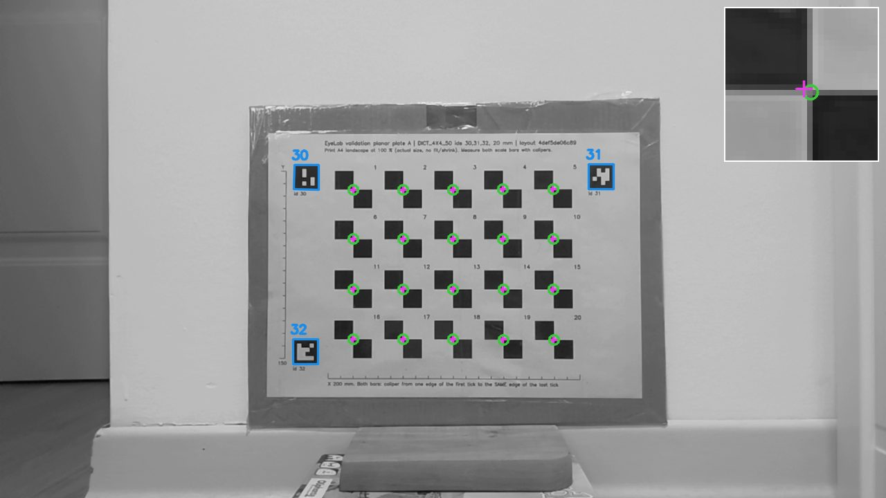
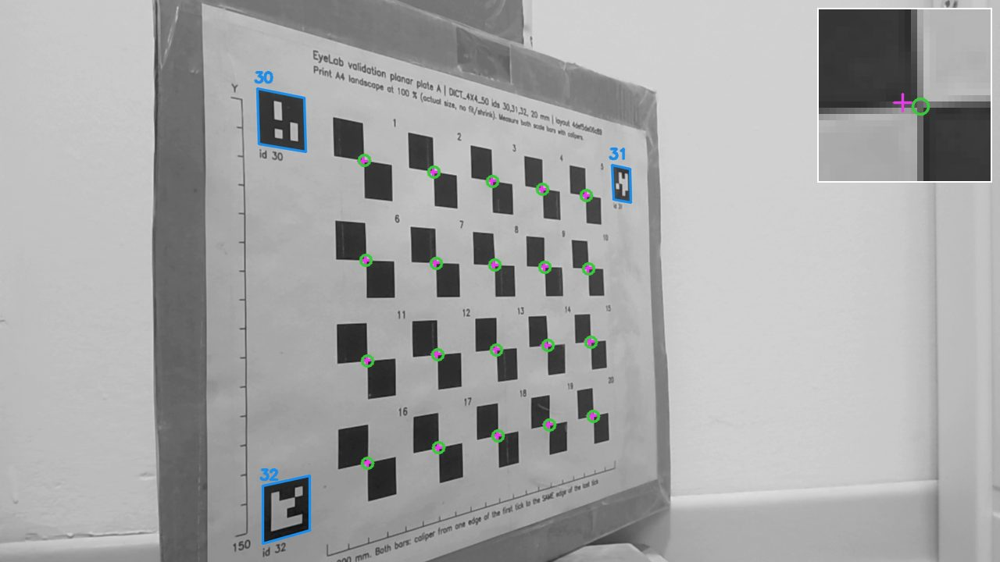
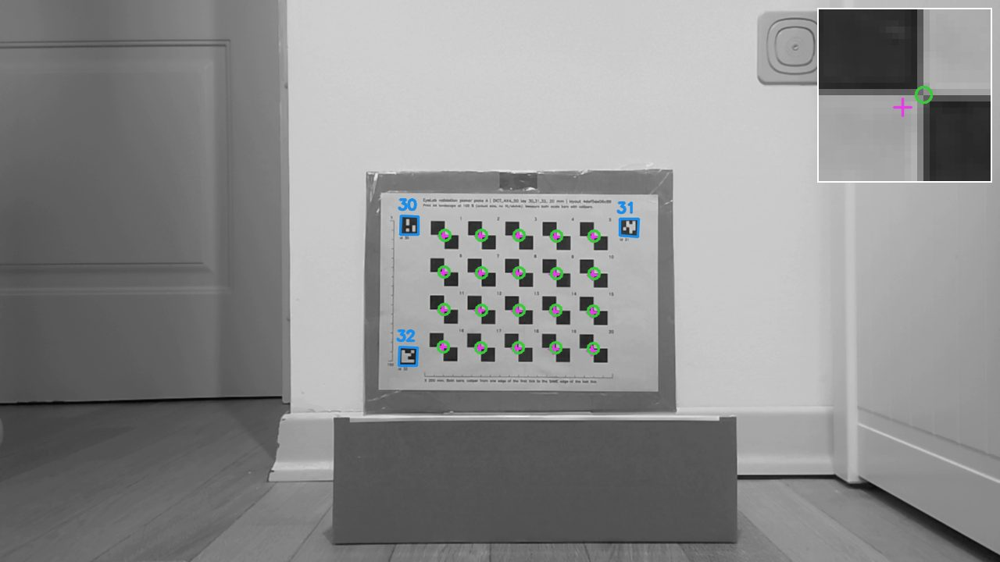
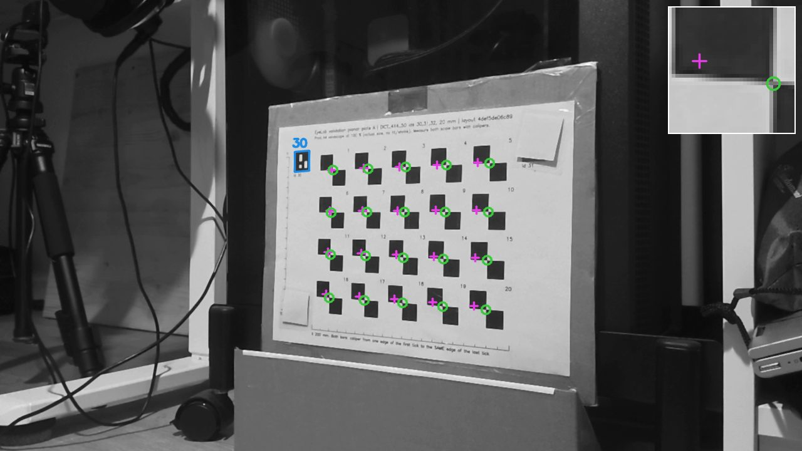
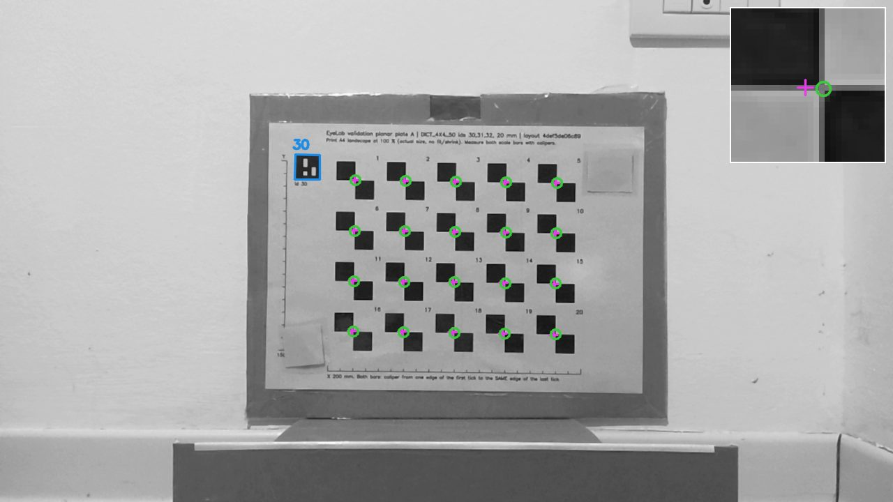

Project wiki · state at build 0.3.000 · 18 October 2026Wiki di progetto · stato alla build 0.3.000 · 18 ottobre 2026
EyeLab: AR guidance for impact-hammer modal testingEyeLab: guida AR per l'analisi modale con martello strumentato
EyeLab overlays the measurement grid of an Experimental Modal Analysis (EMA) test, imported from a Simcenter Testlab .unv file, onto the physical structure, so the operator sees where every accelerometer and impact point sits. The geometry is registered to the specimen through ArUco markers glued on it. The target platform is an optical see-through headset (XREAL One Pro with the XREAL Eye camera); a webcam version in Python/OpenCV is the development and validation baseline.
EyeLab sovrappone alla struttura reale la griglia di misura di una prova di analisi modale sperimentale (EMA), importata da un file .unv di Simcenter Testlab, così che l'operatore veda dove si trovano ogni accelerometro e ogni punto di impatto. La geometria viene registrata sul provino tramite marker ArUco incollati su di esso. La piattaforma finale è un visore ottico see-through (XREAL One Pro con la camera XREAL Eye); la versione webcam in Python/OpenCV è la base di sviluppo e di validazione.
buildbuild0.3.000 (17/10/2026)accuracy aimobiettivo di accuratezza< 1 mmper grid pointper punto di grigliagrid spacingpasso griglia≥ 50 mmauthorautoreGiacomo Di Noto · UNIMORE / UNIVPM
Where the project standsA che punto è il progetto
Vision pipeline (webcam)Pipeline di visione (webcam)
donefattoUNV import, ChArUco calibration, ArUco detection, board PnP, pose lock with Kalman filter, AR overlay, recording.Import UNV, calibrazione ChArUco, rilevamento ArUco, PnP sul board, pose lock con filtro di Kalman, overlay AR, registrazione.
openapertoPlanar-ambiguity handling misbehaves at 900 mm face-on (rotation jitter 6.6° p95).La gestione dell'ambiguità planare sbaglia a 900 mm in vista frontale (jitter di rotazione 6,6° p95).
statusstatoResearch prototype, not yet a validated measuring system.Prototipo di ricerca, non ancora un sistema di misura validato.
okPreliminary campaign: p95 0.52–0.79 mm at 0–30° and 400–600 mm.Campagna preliminare: p95 0,52–0,79 mm a 0–30° e 400–600 mm.
no50° and 900 mm miss 1 mm; single-marker mode reaches 1–8 mm median.50° e 900 mm superano 1 mm; con un solo marker la mediana è 1–8 mm.
nextprossimoRigorous lab campaign with rigid, measured plates and instrument-set geometry.Campagna rigorosa in laboratorio con plate rigidi e misurati e geometria imposta da strumenti.
seenvistoPC SDK 3.1.2 on the Surface: Eye frames 1280×720 at 30 fps; 6DoF head pose; world-locked grid sustained for 5 min.PC SDK 3.1.2 sul Surface: frame Eye 1280×720 a 30 fps; posa 6DoF della testa; griglia ancorata al mondo mantenuta per 5 min.
readyprontoEye calibration capture and the camera-locked overlay (gate G5) are built, not yet run on the glasses.Acquisizione per la calibrazione della Eye e overlay agganciato alla camera (gate G5) pronti, non ancora eseguiti sugli occhiali.
nonenessunoOptical overlay registered to a specimen: not demonstrated yet.Overlay ottico registrato su un provino: non ancora dimostrato.
Pages are grouped in four parts, matching the three work streams plus the decision record. Each page states its sources (repository documents, code modules, run logs) in a line at the bottom, so every number can be traced. Scientific claims cite peer-reviewed literature; where no such source exists, the page says so.
System: how the pipeline works, with the equations it implements. Start with Architecture.
Validation: how accuracy is measured, the uncertainty of the reference, and the first campaign. Start with Metrology framework.
XREAL and platforms: what an optical see-through overlay needs, and what the glasses deliver today. Start with Optical see-through requirements.
Decisions and roadmap: architecture decisions, audit findings, open questions, timeline, glossary and references.
Evidence labels follow the repository's capability matrix: observed (run on this project's hardware, dated), documented (vendor or third-party document, not run here), hypothesised (inferred, no run, no document) and none.
Le pagine sono raggruppate in quattro parti: i tre filoni di lavoro più il registro delle decisioni. Ogni pagina riporta in fondo le proprie fonti (documenti del repository, moduli di codice, log delle prove), così che ogni numero sia rintracciabile. Le affermazioni scientifiche citano letteratura con revisione paritaria; quando una fonte del genere manca, la pagina lo dice.
Sistema: come funziona la pipeline, con le equazioni che implementa. Si parte da Architettura.
Validazione: come si misura l'accuratezza, l'incertezza del riferimento e la prima campagna. Si parte da Impostazione metrologica.
XREAL e piattaforme: cosa richiede un overlay ottico see-through e cosa forniscono oggi gli occhiali. Si parte da Requisiti dell'ottico see-through.
Decisioni e roadmap: decisioni architetturali, risultati degli audit, questioni aperte, cronologia, glossario e bibliografia.
Le etichette di evidenza seguono la matrice delle capacità del repository: osservato (prova eseguita sull'hardware del progetto, con data), documentato (documento del produttore o di terzi, non provato qui), ipotizzato (dedotto, senza prova né documento) e nessuno.
The chain in one pictureLa catena in un'immagine
Testlab.unvnodes, coordinate systems, wireframenodi, sistemi di riferimento, wireframe
→
configmarker modelmodello markermarker id → pose on the structure (m)id marker → posa sulla struttura (m)
displayoverlaynodes projected; in the glasses, per eyenodi proiettati; negli occhiali, per occhio
In the webcam version the overlay is drawn on the video. In the glasses the specimen is seen directly and only the grid is drawn, which adds head tracking, the camera-to-head transform and a per-eye display calibration to the chain (Optical see-through requirements).
Nella versione webcam l'overlay è disegnato sul video. Negli occhiali il provino si vede direttamente e viene disegnata solo la griglia: alla catena si aggiungono il tracciamento della testa, la trasformazione camera-testa e una calibrazione del display per ciascun occhio (Requisiti dell'ottico see-through).
Project roadmap phasesFasi della roadmap
PhaseFase
ContentContenuto
StateStato
A · Webcam MVP
Full UNV → registration → overlay chain in Python/OpenCV on a webcam.Catena completa UNV → registrazione → overlay in Python/OpenCV su webcam.
implementedimplementata
B · XREAL port
Same pipeline driving an optical overlay in the glasses; frames from the Eye camera, pose service per ADR-001.Stessa pipeline per un overlay ottico negli occhiali; frame dalla camera Eye, servizio di posa secondo ADR-001.
in progressin corso
C · Impact verification
Hammer-tip tracking, hit-point matching, Simcenter Testlab bridge.Tracciamento della punta del martello, verifica del punto colpito, collegamento con Simcenter Testlab.
Architecture and data flowArchitettura e flusso dei dati
One Python pipeline does all the measurement work. The webcam application calls it directly; the XREAL application reaches it through a narrow pose interface, so the same detection and pose code serves both.
Tutto il lavoro di misura è svolto da un'unica pipeline Python. L'applicazione webcam la chiama direttamente; l'applicazione XREAL la raggiunge attraverso un'interfaccia di posa ridotta, così lo stesso codice di rilevamento e di posa serve entrambe.
Per-frame pipelinePipeline per frame
frame_packet.pyFramePacketsession id, strictly increasing sequence, host receipt timeid di sessione, sequenza strettamente crescente, istante di ricezione
PoseLockaccept / coastaccetta / coastinggates, 12-state Kalmangate, Kalman a 12 stati
→
overlay.pyproject_nodesUNV nodes and edges into the imagenodi e lati UNV nell'immagine
ArucoPipeline processes each (session, sequence) pair once, drops packets older than max_frame_age_s independently of the reader's progress, and resets every filter when the session changes. This rule exists because a cached frame re-processed as new looked like a fresh measurement (audit finding F03, fixed 8 October 2026). Capture runs on its own thread (ThreadedCapture); camera opens run on worker threads with a delivery check and backend fallback, after a blocking DirectShow open froze the GUI for up to 32 s.
Each frame yields a FrameResult carrying both the raw solve (measured_pose) and the filtered pose drawn on screen. Validation logs both, so the filter's contribution can be separated from the measurement.
ArucoPipeline elabora ogni coppia (sessione, sequenza) una sola volta, scarta i pacchetti più vecchi di max_frame_age_s indipendentemente dall'avanzamento del lettore e azzera tutti i filtri al cambio di sessione. La regola nasce dal fatto che un frame in cache rielaborato come nuovo sembrava una misura fresca (rilievo F03 dell'audit, corretto l'8 ottobre 2026). L'acquisizione gira su un proprio thread (ThreadedCapture); l'apertura della camera avviene su thread di lavoro con verifica di consegna e backend alternativo, dopo che un'apertura DirectShow bloccante aveva congelato la GUI fino a 32 s.
Ogni frame produce un FrameResult che contiene sia la soluzione grezza (measured_pose) sia la posa filtrata disegnata a schermo. La validazione le registra entrambe, così il contributo del filtro si separa da quello della misura.
Deployment: webcam and glassesDistribuzione: webcam e occhiali
Phase A · webcamFase A · webcam
Tkinter GUI (eyelab_gui.py) with calibration, marker, geometry-editor and AR tabs; standalone CLI (webcam_pipeline.py); optional UDP pose broadcast. Launcher run_eyelab.bat creates the virtual environment and starts the GUI.
GUI Tkinter (eyelab_gui.py) con schede per calibrazione, marker, editor di geometria e vista AR; pipeline CLI autonoma (webcam_pipeline.py); invio opzionale della posa via UDP. Il launcher run_eyelab.bat crea l'ambiente virtuale e avvia la GUI.
Phase B · glasses (ADR-001 Step C)Fase B · occhiali (ADR-001, passo C)
A Unity client takes Eye frames, sends the Y plane to a Python pose service over WebSocket (ws://127.0.0.1:8765 in the gate project) and receives (rvec, tvec) with quality fields. The client only depends on IArucoPoseBridge, so a native Android plugin (Step A) or a commercial OpenCV binding (Step B) can replace the service without touching the rest of the app.
Un client Unity prende i frame della Eye, invia il piano Y a un servizio di posa Python via WebSocket (ws://127.0.0.1:8765 nel progetto dei gate) e riceve (rvec, tvec) con i campi di qualità. Il client dipende solo da IArucoPoseBridge, quindi un plugin Android nativo (passo A) o un binding OpenCV commerciale (passo B) possono sostituire il servizio senza toccare il resto dell'applicazione.
UplinkAndata
WebSocket binary frame: 20-byte header <4sB3xIQ (magic, version, reserved, sequence, timestamp_ns) followed by an 8-bit grey JPEG (q 85, 1280×720 baseline, 15 fps initial).Frame binario WebSocket: intestazione da 20 byte <4sB3xIQ (magic, versione, riservati, sequenza, timestamp_ns) seguita da un JPEG in scala di grigi a 8 bit (q 85, 1280×720 di base, 15 fps iniziali).
DownlinkRitorno
JSON text frame: pose with session, sequence, timestamps, clock id, rvec, tvec, marker ids, reprojection RMS, registration RMS, latency, calibration and geometry hashes; an explicit no_pose replaces silence.Frame di testo JSON: pose con sessione, sequenza, timestamp, id dell'orologio, rvec, tvec, id dei marker, RMS di riproiezione, RMS di registrazione, latenza, hash di calibrazione e geometria; un no_pose esplicito sostituisce il silenzio.
HandshakeHandshake
Client hello; service ready with intrinsics and target geometry, so the Unity side never owns a calibration file.hello del client; ready del servizio con intrinseci e geometria del target, così il lato Unity non possiede mai un file di calibrazione.
Pivot ruleRegola di passaggio
Leave Step C if median end-to-end latency exceeds 150 ms, registration degrades beyond 10 mm RMS because of transport, or the network loses more than 5 % of packets in episodes over a 30-min session.Si abbandona il passo C se la latenza mediana end-to-end supera 150 ms, se la registrazione peggiora oltre 10 mm RMS per colpa del trasporto o se la rete perde oltre il 5 % dei pacchetti in episodi durante una sessione di 30 min.
Invariants every module keepsInvarianti rispettate da ogni modulo
unitsunitàMetres everywhere past the UNV parser. Millimetres appear only in user-facing fields named *_mm.Metri ovunque dopo il parser UNV. I millimetri compaiono solo nei campi per l'utente con nome *_mm.
scalescalaEach physical constant (marker edge, ChArUco square and marker length, calibration resolution) is defined once. A pure scale error reprojects perfectly, so a reprojection residual never proves a scale is right (see Calibration).Ogni costante fisica (lato del marker, lato del quadrato e del marker ChArUco, risoluzione di calibrazione) è definita una sola volta. Un errore di scala puro si riproietta perfettamente, quindi un residuo di riproiezione non dimostra mai che la scala è giusta (vedi Calibrazione).
framesframeEach camera frame is processed once; host receipt time is not exposure time.Ogni frame della camera è elaborato una sola volta; l'istante di ricezione non è l'istante di esposizione.
gatesgatePose acceptance depends on the lock phase; marker count never bypasses validity, RMS or motion checks (audit F02).L'accettazione della posa dipende dalla fase del lock; il numero di marker non scavalca mai i controlli di validità, RMS o movimento (audit F02).
Geometry, reference frames and unitsGeometria, sistemi di riferimento e unità
The overlay is only as good as the chain of frames behind it. Four frames meet in EyeLab: the structure (UNV) frame, each marker's frame, the camera frame and, on the glasses, the head and world frames.
L'overlay vale quanto la catena di riferimenti che lo sostiene. In EyeLab se ne incontrano quattro: il riferimento della struttura (UNV), quello di ciascun marker, quello della camera e, negli occhiali, quelli della testa e del mondo.
UNV importImportazione UNV
unv_to_json.py reads Universal File Format datasets 2411 (nodes), 82 (trace lines), 2420 (coordinate systems) and 164 (units) through pyuff, converts to metres and validates the displacement coordinate systems. Non-Cartesian systems are rejected rather than read as Cartesian: before audit fix F01, a cylindrical coordinate of 90° could be silently exposed as y = 90. unv_writer.py and the GUI geometry editor author synthetic UNV files for tests and validation plates.
unv_to_json.py legge i dataset Universal File Format 2411 (nodi), 82 (linee), 2420 (sistemi di riferimento) e 164 (unità) tramite pyuff, converte in metri e valida i sistemi di riferimento degli spostamenti. I sistemi non cartesiani vengono rifiutati invece di essere letti come cartesiani: prima della correzione F01 dell'audit, una coordinata cilindrica di 90° poteva essere esposta silenziosamente come y = 90. unv_writer.py e l'editor di geometria della GUI producono file UNV sintetici per i test e per i plate di validazione.
Transform chainCatena di trasformazioni
The vision pipeline estimates this one rigid transform per frame. Each marker contributes its four corners, expressed in the UNV frame from the marker's centre, normal, roll and edge length stored in the structure's marker configuration.
La pipeline di visione stima questa sola trasformazione rigida per frame. Ogni marker contribuisce con i suoi quattro spigoli, espressi nel riferimento UNV a partire da centro, normale, rotazione (roll) e lato del marker memorizzati nella configurazione dei marker della struttura.
On the glasses the pose is chained into the tracking (world) frame at the capture time t_c. F = diag(1,−1,1) converts OpenCV's camera axes (x right, y down, z forward) to Unity's (y up); for quaternions the map is (w,x,y,z)→(w,−x,y,−z). The head–camera term is the vendor's value today (unvalidated) and the head pose is taken at frame receipt, not exposure (see Gates).
Negli occhiali la posa viene concatenata nel riferimento di tracciamento (mondo) all'istante di acquisizione t_c. F = diag(1,−1,1) converte gli assi camera di OpenCV (x a destra, y in basso, z in avanti) in quelli di Unity (y in alto); per i quaternioni la mappa è (w,x,y,z)→(w,−x,y,−z). Il termine testa–camera oggi è il valore del produttore (non validato) e la posa della testa è presa alla ricezione del frame, non all'esposizione (vedi Gate).
Configuration treeAlbero di configurazione
Path under python/config/Percorso in python/config/
ContentContenuto
cameras/<profile>.yaml
One intrinsic calibration per camera profile, with backups in cameras/history/.Una calibrazione intrinseca per profilo camera, con copie in cameras/history/.
markers/*.markers.json
Marker ids, edge size and pose on the structure (centre, normal, rollDeg).Id dei marker, lato e posa sulla struttura (centro, normale, rollDeg).
geometry/*.unv
Structure geometry, including the validation plates.Geometria della struttura, compresi i plate di validazione.
targets/*.target.json
Validation ground truth: faces, reference points, markers, measured scale.Verità a terra per la validazione: facce, punti di riferimento, marker, scala misurata.
active.json
Active camera, marker set and geometry (not versioned).Camera, set di marker e geometria attivi (non versionato).
python/eyelab_paths.py is the single source of every path, shared by the GUI, the validation tools and the XREAL pose service.
python/eyelab_paths.py è l'unica fonte di tutti i percorsi, condivisa da GUI, strumenti di validazione e servizio di posa XREAL.
Camera model and calibrationModello di camera e calibrazione
Every pose is computed through the intrinsic model of one specific camera at one resolution and focus. Calibration error enters every measurement as a systematic term.
Ogni posa è calcolata attraverso il modello intrinseco di una specifica camera, a una risoluzione e a una messa a fuoco date. L'errore di calibrazione entra in ogni misura come termine sistematico.
Projection modelModello di proiezione
Pinhole model with intrinsic matrix K [2]. D applies lens distortion on normalised coordinates (x,y), r² = x² + y²:
Modello pinhole con matrice intrinseca K [2]. D applica la distorsione della lente sulle coordinate normalizzate (x,y), r² = x² + y²:
OpenCV's 5-coefficient model (k1,k2,p1,p2,k3). The Eye calibration tool also tries the rational model and keeps it only if it lowers the RMS by more than 15 %.
Modello OpenCV a 5 coefficienti (k1,k2,p1,p2,k3). Lo strumento di calibrazione della Eye prova anche il modello razionale e lo tiene solo se riduce l'RMS di oltre il 15 %.
Calibration procedureProcedura di calibrazione
Zhang's method [1]: closed-form initialisation from plane homographies, then Levenberg–Marquardt refinement over all views i and board corners j.
Metodo di Zhang [1]: inizializzazione in forma chiusa dalle omografie dei piani, poi raffinamento Levenberg–Marquardt su tutte le viste i e gli spigoli del board j.
BoardBoard
ChArUco 5×7, 25 mm squares, 19 mm markers, DICT_4X4_50 (calibrate.py --generate). One board for the whole project.ChArUco 5×7, quadrati da 25 mm, marker da 19 mm, DICT_4X4_50 (calibrate.py --generate). Un solo board per tutto il progetto.
TargetObiettivo
RMS reprojection < 0.5 px at the resolution used for measurement. Surface front camera, 1280×720: 0.42 px.RMS di riproiezione < 0,5 px alla risoluzione usata per misurare. Camera frontale del Surface, 1280×720: 0,42 px.
FocusFuoco
Fixed focus is required (--focus on calibration and capture); autofocus changes the intrinsics. It was still on in the first campaign.Serve il fuoco fisso (--focus in calibrazione e acquisizione); l'autofocus cambia gli intrinseci. Nella prima campagna era ancora attivo.
ProfilesProfili
One YAML per camera profile; a resolution mismatch is refused. Binding to device identity, crop, rotation and focus state is still missing (audit F10, open).Un YAML per profilo camera; una risoluzione diversa viene rifiutata. Manca ancora il legame con identità del dispositivo, ritaglio, rotazione e stato del fuoco (audit F10, aperto).
Eye cameraCamera Eye
Guided capture of up to 60 views spread over image position and board size; refused below 35 % image coverage or when fx, fy differ from the vendor value by more than 25 %. A one-place capture gave RMS 0.37 px with fx = 4344 px, a scale error of about 7×: low RMS does not prove a good calibration.Acquisizione guidata fino a 60 viste distribuite per posizione nell'immagine e dimensione del board; rifiutata sotto il 35 % di copertura dell'immagine o se fx, fy si scostano di oltre il 25 % dal valore del produttore. Un'acquisizione in un solo punto ha dato RMS 0,37 px con fx = 4344 px, un errore di scala di circa 7 volte: un RMS basso non dimostra una buona calibrazione.
Why reprojection cannot see scalePerché la riproiezione non vede la scala
Perspective projection is invariant to a common scale of the object and the translation [2]. A wrong marker size, unit factor or print scale therefore moves the estimated depth by the same factor and leaves the reprojection residual unchanged. Absolute scale must be checked against an independent length: the scale bars of the validation plates and the step test B3.
La proiezione prospettica è invariante a una scala comune dell'oggetto e della traslazione [2]. Una dimensione sbagliata del marker, un fattore di unità o una scala di stampa errata spostano quindi la profondità stimata dello stesso fattore e lasciano invariato il residuo di riproiezione. La scala assoluta va verificata con una lunghezza indipendente: le barre di scala dei plate di validazione e il test di passo B3.
Square fiducials from the ArUco family [3] give four corners and an identity per detection. Corner location accuracy is the dominant noise source in every later step.
I marker quadrati della famiglia ArUco [3] forniscono quattro spigoli e un'identità per ogni rilevamento. La precisione di localizzazione degli spigoli è la principale sorgente di rumore in tutti i passi successivi.
Detection chainCatena di rilevamento
StepPasso
Implementation and defaultImplementazione e valore di default
DictionaryDizionario
DICT_4X4_50; markers are 20 mm on the validation plates, per-structure size in the marker config.marker da 20 mm sui plate di validazione, dimensione per struttura nella configurazione dei marker.
ContrastContrasto
CLAHE [22] on the grey image, 8×8 tiles, clip limit 2.5 (cached object).CLAHE [22] sull'immagine in grigio, tasselli 8×8, clip limit 2,5 (oggetto in cache).
ThresholdingSoglia
Adaptive, windows 3 → 37 px in steps of 6, constant 8.Adattiva, finestre da 3 a 37 px a passi di 6, costante 8.
refineDetectedMarkers against the board model; every frame while it recovers markers, then 1 frame in 5 after 30 idle frames; skipped above 64 candidates.refineDetectedMarkers rispetto al modello del board; a ogni frame finché recupera marker, poi 1 frame su 5 dopo 30 frame senza recuperi; saltato oltre 64 candidati.
FlickerIntermittenza
MarkerCarryover: pyramidal Lucas–Kanade flow [21] (21×21, 3 levels) carries a marker missed for up to 5 frames.MarkerCarryover: flusso piramidale di Lucas–Kanade [21] (21×21, 3 livelli) riporta un marker perso per al massimo 5 frame.
Small markersMarker piccoli
RoiRedetector: when fewer than the trusted count are seen, missing board markers are projected through the predicted pose and re-detected in up to 4 crops upscaled 2×.RoiRedetector: se si vedono meno marker del numero affidabile, quelli mancanti vengono proiettati con la posa predetta e ri-rilevati in al massimo 4 ritagli ingranditi 2×.
PresetsPreset
strict · balanced · forgiving, tunable live in the GUI.regolabili dal vivo nella GUI.
How many pixels a marker getsQuanti pixel ottiene un marker
Image size of a marker of edge s at distance d and tilt θ (along the tilt axis), and the object-space size of one pixel. Webcam, f ≈ 1100 px: a 20 mm marker spans about 54 px at 400 mm and 24 px at 900 mm. XREAL Eye at 1280×720 with a horizontal field of about 93° (f ≈ 610 px): 1 px ≈ 1.3 mm at 0.8 m.
Dimensione nell'immagine di un marker di lato s a distanza d e inclinazione θ (lungo l'asse di inclinazione), e dimensione di un pixel nello spazio dell'oggetto. Webcam, f ≈ 1100 px: un marker da 20 mm occupa circa 54 px a 400 mm e 24 px a 900 mm. XREAL Eye a 1280×720 con campo orizzontale di circa 93° (f ≈ 610 px): 1 px ≈ 1,3 mm a 0,8 m.
Finding from campaign 1Risultato della campagna 1
Mapped through the saddle-point homography, marker edges appear 0.6–0.9 px short per side, independently of distance. A fixed pixel bias points to corner localisation, not to print size. OpenCV's own documentation notes that ArUco corners stay less accurate than chessboard corners even with sub-pixel refinement, which is the motivation for ChArUco [27]. Details in Campaign 1 · B1.
Riportati sul piano tramite l'omografia dei punti sella, i lati dei marker risultano più corti di 0,6–0,9 px per lato, indipendentemente dalla distanza. Uno scarto fisso in pixel indica la localizzazione degli spigoli, non la dimensione di stampa. La documentazione di OpenCV osserva che gli spigoli ArUco restano meno accurati degli angoli di una scacchiera anche con raffinamento sub-pixel, ed è questa la ragione del ChArUco [27]. Dettagli in Campagna 1 · B1.
python/pose_estimator.py (ArucoDetectorTuning, make_detector_parameters), python/pose_lock.py (MarkerCarryover, RoiRedetector), docs/XREAL-PC-GATES-G1-G3.md §17. [3] Garrido-Jurado et al. 2014; [4] Romero-Ramirez et al. 2018; [21] Lucas & Kanade 1981; [22] Zuiderveld 1994; [27] OpenCV ChArUco tutorial.
SystemSistema
Pose estimation (PnP)Stima della posa (PnP)
All visible marker corners are solved together as one rigid board expressed in the structure frame. The board pose is the registration.
Tutti gli spigoli dei marker visibili vengono risolti insieme come un unico board rigido espresso nel riferimento della struttura. La posa del board è la registrazione.
ProblemProblema
Perspective-n-Point over the 4m corners of m markers, minimising reprojection error in the image, where the noise lives [2, 5]. board.matchImagePoints pairs detected corners with model points; the residual RMS e_rms is kept as a quality figure.
Perspective-n-Point sui 4m spigoli di m marker, minimizzando l'errore di riproiezione nell'immagine, dove si trova il rumore [2, 5]. board.matchImagePoints accoppia gli spigoli rilevati ai punti del modello; l'RMS del residuo e_rms è conservato come indice di qualità.
Solver as implementedRisolutore implementato
1planarity testtest di planaritàmodel points within 0.1 mm of a plane?punti del modello entro 0,1 mm da un piano?
→
2 · planar2 · planareSOLVEPNP_IPPEtwo solutions, sorted by error; keep the one closest to the Kalman prediction, else the lower errordue soluzioni ordinate per errore; si tiene quella più vicina alla predizione di Kalman, altrimenti quella con errore minore
→
2 · non-planar2 · non planareSOLVEPNP_ITERATIVEDLT/homography initialisationinizializzazione DLT/omografia
→
3solvePnPRefineLMLevenberg–Marquardt on reprojection errorLevenberg–Marquardt sull'errore di riproiezione
Without a structure board, a single marker is solved with SOLVEPNP_IPPE_SQUARE. Rotation vectors are aligned to the previous one ((θ, a) ≡ (2π − θ, −a)) before filtering, so the Rodrigues representation does not jump between frames.
Senza un board della struttura, un singolo marker si risolve con SOLVEPNP_IPPE_SQUARE. I vettori di rotazione vengono allineati al precedente ((θ, a) ≡ (2π − θ, −a)) prima del filtraggio, così la rappresentazione di Rodrigues non salta tra un frame e l'altro.
Planar two-fold ambiguityAmbiguità planare a due soluzioni
For a planar point set seen under weak perspective, two poses related by a reflection about the line of sight explain the image almost equally well [6, 7]. IPPE returns both. EyeLab measures how distinguishable they are:
Per un insieme di punti planare visto in prospettiva debole, due pose legate da una riflessione attorno alla linea di vista spiegano l'immagine quasi allo stesso modo [6, 7]. IPPE le restituisce entrambe. EyeLab misura quanto sono distinguibili:
e1 ≤ e2 are the reprojection errors of the two IPPE solutions. An ambiguous candidate cannot start a lock. Thresholds come from a synthetic sweep (20 mm markers, 0.3 px corner noise, f = 800 px) and are to be calibrated by test B1c.
e1 ≤ e2 sono gli errori di riproiezione delle due soluzioni IPPE. Un candidato ambiguo non può avviare un lock. Le soglie vengono da una simulazione (marker da 20 mm, rumore sugli spigoli 0,3 px, f = 800 px) e vanno tarate con il test B1c.
Synthetic caseCaso simulato
BehaviourComportamento
1 marker, 0.6–0.9 m1 marker, 0,6–0,9 m
ρ ≈ 1–2 at any angle: single-marker acquisition mostly refused; usable near 0.3 m at ≥ 20° tilt.ρ ≈ 1–2 a ogni angolo: l'aggancio con un marker è quasi sempre rifiutato; diventa usabile verso 0,3 m con inclinazione ≥ 20°.
2 coplanar markers, 100–150 mm apart2 marker complanari a 100–150 mm
Unambiguous at 0.6 m from 20–30° tilt; face-on, median rotation error 3–8°.Non ambiguo a 0,6 m da 20–30° di inclinazione; in vista frontale l'errore di rotazione mediano è 3–8°.
Markers on non-coplanar facesMarker su facce non complanari
No planar ambiguity: on real structures, spread markers over different faces.Nessuna ambiguità planare: sulle strutture reali conviene distribuire i marker su facce diverse.
Known defectDifetto noto
With three 20 mm markers at 900 mm face-on (about 24 px each), ρ was 1.7–2.0. Picking the IPPE solution closest to the Kalman prediction and refining it with LM lets a wrong mirror solution persist: rotation jitter 6.6° (p95) against 0.6° for a globally optimal solver (SQPnP [8] + LM) on the same corners. The ambiguity check acts only at acquisition; once locked, the solution nearest the prediction is kept, so a wrong branch reinforces itself. Proposed fix: SQPnP + LM for multi-marker boards, or LM on both IPPE solutions keeping the lower error and using the prediction only for near ties.
Con tre marker da 20 mm a 900 mm in vista frontale (circa 24 px ciascuno), ρ valeva 1,7–2,0. Scegliere la soluzione IPPE più vicina alla predizione di Kalman e raffinarla con LM lascia persistere una soluzione speculare sbagliata: jitter di rotazione 6,6° (p95) contro 0,6° di un risolutore a ottimo globale (SQPnP [8] + LM) sugli stessi spigoli. Il controllo di ambiguità agisce solo all'aggancio; a lock acquisito si tiene la soluzione più vicina alla predizione, quindi un ramo sbagliato si autoalimenta. Correzione proposta: SQPnP + LM per board con più marker, oppure LM su entrambe le soluzioni IPPE tenendo l'errore minore e usando la predizione solo nei casi quasi equivalenti.
A state machine decides which measured poses become the drawn pose. It separates acquisition, sustained tracking and recovery, because each phase has different evidence available.
Una macchina a stati decide quali pose misurate diventano la posa disegnata. Separa aggancio, tracciamento sostenuto e recupero, perché in ciascuna fase sono disponibili evidenze diverse.
StatesStati
PhaseFase
Checks on every candidateControlli su ogni candidato
SEARCHING
Finite, positive depth; RMS ≤ 15 px ceiling; planar ambiguity check. ≥ 3 markers lock at once; 2 markers need 5 consecutive consistent poses (≤ 20 mm, ≤ 8°).Finito, profondità positiva; RMS ≤ 15 px; controllo dell'ambiguità planare. Con ≥ 3 marker l'aggancio è immediato; con 2 servono 5 pose consecutive coerenti (≤ 20 mm, ≤ 8°).
LOCKED
Adaptive RMS gate max(3 px, 2.5·baseline); time-aware jump gates against the prediction; 1 marker sustains the lock.Gate RMS adattivo max(3 px, 2,5·baseline); gate sul salto rispetto alla predizione, dipendenti dal tempo; 1 marker mantiene il lock.
COASTING
No acceptable measurement: prediction only, for 0.3 s. Then back to SEARCHING with a filter reset, so a moved specimen is reacquired, not chased.Nessuna misura accettabile: solo predizione, per 0,3 s. Poi ritorno a SEARCHING con reset del filtro, così un provino spostato viene riagganciato invece che inseguito.
Motion gate: Δt is the time since the last accepted measurement, so a slow frame is not penalised and a fast one is not waved through.
Gate di movimento: Δt è il tempo dall'ultima misura accettata, così un frame lento non viene penalizzato e uno veloce non passa senza controllo.
Default since 6 October 2026.Default dal 6 ottobre 2026.
single
1 / 1 / 3
Opt-in single-marker acquisition.Aggancio con un marker, su richiesta.
legacy3
3 / 1 / 3
Previous behaviour, for A/B comparison.Comportamento precedente, per confronto A/B.
Kalman filterFiltro di Kalman
Constant-velocity model on translation t and rotation vector r [11, 12], with Q = 10⁻⁴ I, R = 10⁻² I. The step is one frame, not a time in seconds, so the filter's dynamics change with frame rate. Filtering a rotation vector linearly is an approximation valid for small inter-frame rotations; the validation reports rotation jitter about the chordal mean instead [13].
Modello a velocità costante su traslazione t e vettore di rotazione r [11, 12], con Q = 10⁻⁴ I, R = 10⁻² I. Il passo è un frame, non un tempo in secondi, quindi la dinamica del filtro cambia con la frequenza dei frame. Filtrare linearmente un vettore di rotazione è un'approssimazione valida per piccole rotazioni tra frame; la validazione riporta invece il jitter di rotazione attorno alla media cordale [13].
System · ADR-002 (proposed)Sistema · ADR-002 (proposta)
Registration: board solve and KabschRegistrazione: solve sul board e Kabsch
Two routes compute the same structure-to-camera transform. Simulation shows the joint board solve is about ten times more accurate for the live pose; Kabsch keeps a role as a roll-free bootstrap and as an independent check of marker placement.
Due percorsi calcolano la stessa trasformazione struttura-camera. La simulazione mostra che il solve congiunto sul board è circa dieci volte più accurato per la posa in tempo reale; Kabsch conserva un ruolo come inizializzazione indipendente dal roll e come verifica indipendente del posizionamento dei marker.
Route A · Kabsch on marker centresPercorso A · Kabsch sui centri dei marker
Least-squares rigid alignment of model centres p to per-marker PnP centres q [9, 10]. It needs only marker centres, so it is blind to marker roll, but it minimises an unweighted 3D cost while per-marker depth noise is much larger than lateral noise.
Allineamento rigido ai minimi quadrati dei centri del modello p sui centri q ottenuti con una PnP per marker [9, 10]. Servono solo i centri, quindi è insensibile al roll dei marker, ma minimizza un costo 3D non pesato mentre il rumore in profondità di ciascun marker è molto più grande di quello laterale.
Simulation results (ADR-002)Risultati della simulazione (ADR-002)
4–5 markers on an 80–100 mm layout at 0.5 m, 0.2 px corner noise, 120–300 trials. RMS node error.
4–5 marker su una disposizione di 80–100 mm a 0,5 m, rumore sugli spigoli 0,2 px, 120–300 prove. Errore RMS sui nodi.
Marker roll errorErrore di roll
Board solveSolve sul board
Kabsch
0°
0.43 mm
2.65 mm
15°
1.24 mm
2.79 mm
30°
2.60 mm
2.96 mm
45°
4.03 mm
2.68 mm
90°
10.36 mm
2.85 mm
Arbitrary roll, none measuredRoll arbitrario, non misurato
RMS
Board solve, model roll = 0Solve sul board, roll del modello = 0
9.85 mm
Kabsch on centresKabsch sui centri
2.75 mm
Kabsch → roll recovery → board solveKabsch → recupero del roll → solve sul board
0.44 mm
Proposed decision: the board solve is the only source of the live pose; a one-off "learn board" pass uses Kabsch plus each marker's own orientation to recover roll (to 0.59° in simulation) and writes it into the marker config; Kabsch residuals stay as placement QA. The Kabsch conditioning gate was repaired for planar layouts (audit F06). The pass itself is not implemented. Marker placement error is likely the dominant error source on real structures and is not yet measured; a bundle adjustment over many views is the principled endpoint.
Decisione proposta: il solve sul board è l'unica fonte della posa in tempo reale; un passaggio "learn board" una tantum usa Kabsch e l'orientamento proprio di ciascun marker per recuperare il roll (entro 0,59° in simulazione) e lo scrive nella configurazione dei marker; i residui di Kabsch restano come controllo del posizionamento. Il gate di condizionamento di Kabsch è stato corretto per le disposizioni planari (audit F06). Il passaggio vero e proprio non è implementato. L'errore di posizionamento dei marker è probabilmente la principale sorgente di errore sulle strutture reali e non è ancora misurato; l'approdo naturale è un bundle adjustment su molte viste.
Overlay and error propagationOverlay e propagazione dell'errore
What the operator judges is the drawn position of a grid node relative to the real one. Three mechanisms turn small pose errors into visible node errors.
Ciò che l'operatore valuta è la posizione disegnata di un nodo della griglia rispetto a quella reale. Tre meccanismi trasformano piccoli errori di posa in errori visibili sui nodi.
1 · Lever arm1 · Braccio di leva
A rotation error δθ about the anchoring markers moves a node at distance L by L·δθ: 0.5° at 200 mm is 1.7 mm. This is why single-marker sustain degrades with distance from the marker (B1b), and why a 6° mirror-pose error moves a point 30 mm off the plate by about 3 mm.
Un errore di rotazione δθ attorno ai marker di ancoraggio sposta un nodo a distanza L di L·δθ: 0,5° a 200 mm sono 1,7 mm. Per questo il mantenimento con un solo marker peggiora allontanandosi dal marker (B1b), e un errore di 6° della posa speculare sposta di circa 3 mm un punto a 30 mm dal plate.
2 · Depth and scale2 · Profondità e scala
A depth error δz on a plate at distance d rescales its projection by −δz/d. In campaign 1 the grid was drawn 2–5 ‰ small, consistent with the plate placed 0.5–2.9 mm too far: at 100 mm from the plate centre this is 0.2–0.5 mm.
Un errore di profondità δz su un plate a distanza d ne riscala la proiezione di −δz/d. Nella campagna 1 la griglia era disegnata più piccola del 2–5 ‰, coerente con un plate collocato 0,5–2,9 mm troppo lontano: a 100 mm dal centro del plate sono 0,2–0,5 mm.
With the camera on the head, a head rate ω and a pose age Δt give an angular error ε. In optical see-through the world is seen with no delay, so the mismatch is directly visible; delay is the largest registration error source in Holloway's analysis [20].
Con la camera sulla testa, una velocità di rotazione ω e un'età della posa Δt producono un errore angolare ε. Nell'ottico see-through il mondo si vede senza ritardo, quindi lo scarto è direttamente visibile; il ritardo è la principale sorgente di errore di registrazione nell'analisi di Holloway [20].
Head rateVelocità della testa
Δt = 100 ms
lateral error at 1 merrore laterale a 1 m
10 °/s, holding still10 °/s, testa ferma
1.0°
17 mm
30 °/s, slow look30 °/s, sguardo lento
3.0°
52 mm
100 °/s, glance100 °/s, occhiata
10°
176 mm
Hence the glasses design anchors the overlay in the headset's world frame (6DoF tracking) and uses camera poses only to place and correct that anchor while the head is nearly still (G4/G5).
Per questo negli occhiali l'overlay è ancorato al riferimento mondo del visore (tracciamento 6DoF) e le pose della camera servono solo a collocare e correggere l'ancora quando la testa è quasi ferma (G4/G5).
Lock state machine, carry-over, ROI re-detection.Macchina a stati del lock, riporto, ri-rilevamento in ROI.
registration.py
Kabsch / Procrustes, quality metricsmetriche di qualità.
calibrate.py, camera_utils.py
ChArUco calibration, profiles, focus lock, non-blocking camera open.Calibrazione ChArUco, profili, blocco del fuoco, apertura camera non bloccante.
unv_to_json.py, unv_writer.py
UNV parsing and authoring.Lettura e scrittura UNV.
overlay.py, frame_packet.py, eyelab_paths.py
Projection and drawing; frame packets; path registry.Proiezione e disegno; pacchetti dei frame; registro dei percorsi.
python/validation/
Plates, capture, independent ground truth, metrics, uncertainty, campaign runner, ground-truth review.Plate, acquisizione, verità a terra indipendente, metriche, incertezza, gestione campagna, revisione della verità a terra.
python/xreal_gates/
Gate run import and summary, Eye calibration, offline lock test, WebSocket pose service.Import e riepilogo delle prove dei gate, calibrazione Eye, test offline del lock, servizio di posa WebSocket.
python/xreal_*.py
Native-API probes of September 2026 (stages S0–S3b).Sonde dell'API nativa di settembre 2026 (stadi S0–S3b).
unity_projects/xreal_pc_gates/
Unity gate harness for the XREAL PC SDK (Windows players, Surface launcher).Harness Unity dei gate per il PC SDK XREAL (player Windows, launcher per il Surface).
eyelab_xreal/
Android Unity project (SDK 3.1.0), scaffold for the final app.Progetto Unity Android (SDK 3.1.0), base per l'applicazione finale.
Launchers and conventionsLauncher e convenzioni
runavviorun_eyelab.bat (GUI), validation.bat (campaign menumenu della campagna), Tools/run_gates.bat (XREAL gates on the Surfacegate XREAL sul Surface).
versionversioneMAJOR.MINOR.BUILD, single source python/eyelab_version.py, bumped by tools/bump_version.py; every commit subject starts with its build number; tags only at MINOR cuts.MAJOR.MINOR.BUILD, unica fonte python/eyelab_version.py, incrementata da tools/bump_version.py; ogni messaggio di commit inizia con il numero di build; tag solo ai cambi di MINOR.
teststestpython -m unittest discover -p "test_*.py"from python/; tests live beside their modules.da python/; i test stanno accanto ai moduli.
docsdocPrecedence: AGENTS.md → CONTEXT.md → ADRs (append-only) → task plans. When a document disagrees with observed runtime behaviour, the runtime wins and the document is corrected.Precedenza: AGENTS.md → CONTEXT.md → ADR (solo aggiunte) → piani di lavoro. Quando un documento contrasta con il comportamento osservato, vale l'osservazione e il documento va corretto.
The validation measures how far from the true point EyeLab draws each grid node, against a printed reference whose own uncertainty is budgeted. The reference is located without using any EyeLab output.
La validazione misura quanto lontano dal punto vero EyeLab disegna ciascun nodo della griglia, rispetto a un riferimento stampato di cui si quantifica l'incertezza. Il riferimento viene localizzato senza usare alcun risultato di EyeLab.
PrinciplesPrincipi
One definition of each plateUna sola definizione per ogni plate
One layout generates the PDF, the ground-truth target, the marker configuration and the UNV geometry. Markers and reference points are printed together, so their relative positions come from the print, not from caliper work on marker centres or roll.
Un'unica disposizione genera il PDF, il target di verità, la configurazione dei marker e la geometria UNV. Marker e punti di riferimento sono stampati insieme, quindi le loro posizioni relative vengono dalla stampa, non da misure al calibro di centri o roll dei marker.
The instrument only checks the printerLo strumento controlla solo la stampante
Each plate carries an X and a Y scale bar; their measured lengths rescale the layout per axis.
Ogni plate porta una barra di scala in X e una in Y; le loro lunghezze misurate riscalano la disposizione per asse.
Independent ground truthVerità a terra indipendente
The analysis detects the markers itself and grows a face homography over sub-pixel saddle points. A first draft seeded this search with EyeLab's own projection and reported a 15 mm error as 0.1 mm; tests now recover injected errors from 0 to 30 mm.
L'analisi rileva da sé i marker ed estende un'omografia della faccia sui punti sella sub-pixel. Una prima versione partiva dalla proiezione di EyeLab e riportava un errore di 15 mm come 0,1 mm; oggi i test recuperano errori iniettati da 0 a 30 mm.
The session is the statistical unitLa sessione è l'unità statistica
Frames of one static pose are not independent. Spread between conditions comes from repositioned repetitions; per-frame confidence intervals would be pseudoreplication [18].
I frame di una stessa posa statica non sono indipendenti. La dispersione tra condizioni viene dalle ripetizioni con riposizionamento; intervalli di confidenza per frame sarebbero pseudo-replicazione [18].
What is measuredCosa si misura
ũ_E: EyeLab's projection of a node (float, undistorted, homogeneous). H_f: homography of face f fitted to the detected saddles of the same frame [2]. The error is the in-plane distance on the face, i.e. what decides whether the operator hits the right node. Depth error is invisible to it by construction.
ũ_E: proiezione di un nodo da parte di EyeLab (in virgola mobile, senza distorsione, omogenea). H_f: omografia della faccia f stimata sui punti sella rilevati nello stesso frame [2]. L'errore è la distanza nel piano della faccia, cioè ciò che decide se l'operatore colpisce il nodo giusto. L'errore di profondità per costruzione non vi compare.
MetricMetrica
DefinitionDefinizione
err_mm, err_mm_raw
On-face error for the drawn (filtered) and raw pose. Reported as RMSE, median, p95 and max.Errore sulla faccia per la posa disegnata (filtrata) e grezza. Riportato come RMSE, mediana, p95 e massimo.
err_px, err_px_drawn
Image distance for the float projection and the integer pixels actually drawn (rounding adds ≈ 0.4 px).Distanza nell'immagine per la proiezione in virgola mobile e per i pixel interi effettivamente disegnati (l'arrotondamento aggiunge ≈ 0,4 px).
bias / jitterbias / jitter
Mean error vector per node (systematic) vs spread about it (random); bias_map.png.Vettore di errore medio per nodo (sistematico) contro dispersione attorno a esso (casuale); bias_map.png.
jitter_measured, jitter_pose
Static-pose spread, translation (mm) and rotation (° about the chordal mean), raw vs Kalman.Dispersione della posa statica, traslazione (mm) e rotazione (° attorno alla media cordale), grezza contro Kalman.
homography_residual_px
QA: must stay well below the errors being measured.Controllo qualità: deve restare ben sotto gli errori misurati.
step errorerrore di passo
Estimated minus known translation between two static sessions (B3): the only test of absolute scale.Traslazione stimata meno traslazione nota tra due sessioni statiche (B3): l'unico test della scala assoluta.
Uncertainty of the referenceIncertezza del riferimento
GUM type-B evaluation [15]: an instrument quoted as ±a is treated as rectangular. Terms: print anisotropy R·u(s_x − s_y)/2 with R ≤ 137 mm; placement 0.02 mm; paper flatness 0.05 mm; for plate L the fold angle, 64 mm·dφ. A uniform print scale cancels in on-face errors. For a pass/fail claim at T = 1 mm the reference should be 4× better (TUR ≥ 4, after ANSI/NCSL Z540.3 [16]), i.e. u_c ≤ 0.125 mm.
Valutazione di tipo B secondo la GUM [15]: uno strumento dichiarato ±a è trattato come distribuzione rettangolare. Termini: anisotropia di stampa R·u(s_x − s_y)/2 con R ≤ 137 mm; posizionamento 0,02 mm; planarità della carta 0,05 mm; per il plate L l'angolo di piega, 64 mm·dφ. Una scala di stampa uniforme si elide negli errori sulla faccia. Per un giudizio passa/non passa a T = 1 mm il riferimento deve essere 4 volte migliore (TUR ≥ 4, secondo ANSI/NCSL Z540.3 [16]), cioè u_c ≤ 0,125 mm.
InstrumentStrumento
Plate A u (TUR)Plate A u (TUR)
Plate L u (TUR)Plate L u (TUR)
B3 step u (TUR)Passo B3 u (TUR)
Ruler ±1 mmRiga ±1 mm
0.33 mm (1.5)
0.53 mm (0.9)
0.82 mm (0.6)
Digital caliper ±0.03 mmCalibro digitale ±0,03 mm
0.055 mm (9.1)
0.13 mm (4.0)
0.024 mm (20)
Open audit finding F04Rilievo aperto F04 dell'audit
Placement (0.02 mm) and flatness (0.05 mm) are assumed, not measured; the fold-angle term assumes independent frames and a 0.1° intrinsics floor; the same intrinsics enter fold fitting and validation. A ±a specification is not automatically a rectangular bound, and k = 2 is not automatically 95 % coverage. Until these terms are measured, results are reported with their U but without an unconditional metrological pass. Campaign 1 indeed suggests markers up to 0.9 mm off the plane on the paper plate.
Posizionamento (0,02 mm) e planarità (0,05 mm) sono ipotizzati, non misurati; il termine dell'angolo di piega assume frame indipendenti e una soglia minima di 0,1° per gli intrinseci; gli stessi intrinseci entrano nella stima della piega e nella validazione. Una specifica ±a non è automaticamente un limite rettangolare, e k = 2 non garantisce automaticamente una copertura del 95 %. Finché questi termini non sono misurati, i risultati si riportano con la loro U ma senza un giudizio metrologico incondizionato. La campagna 1 indica infatti marker fino a 0,9 mm fuori piano sul plate di carta.
Acceptance thresholdSoglia di accettazione
The 1 mm per-node aim is a project requirement set by the author for EMA grids with ≥ 50 mm spacing. No peer-reviewed source fixing this threshold for AR-guided modal testing has been found. The audit also asks to define whether it bounds per-axis, 3D radial, projected display error or a percentile; campaign 1 uses the p95 of the on-face error.
L'obiettivo di 1 mm per nodo è un requisito di progetto fissato dall'autore per griglie EMA con passo ≥ 50 mm. Non è stata trovata una fonte con revisione paritaria che fissi questa soglia per l'analisi modale guidata in AR. L'audit chiede inoltre di stabilire se il limite riguarda l'errore per asse, l'errore radiale 3D, l'errore proiettato sul display o un percentile; la campagna 1 usa il p95 dell'errore sulla faccia.
Two printed plates and five tests, run from one campaign menu (validation.bat) with repetitions as the outer loop.
Due plate stampati e cinque prove, gestite da un unico menu di campagna (validation.bat) con le ripetizioni come ciclo esterno.
PlatesPlate
Plate A (A4 landscape, mm)Plate A (A4 orizzontale, mm)
20 saddle points (5×4, 40 mm pitch, 15 mm squares) and three 20 mm DICT_4X4_50 markers (ids 30, 31, 32) in an asymmetric L. Scale bars of 200 and 150 mm.20 punti sella (5×4, passo 40 mm, quadrati da 15 mm) e tre marker DICT_4X4_50 da 20 mm (id 30, 31, 32) disposti a L asimmetrica. Barre di scala da 200 e 150 mm.
Plate L (folded)Plate L (piegato)
Two faces of 5×2 saddles, markers 40/41 on the flat face and 42/43 on the upright one: non-coplanar markers and a grazing face. Valley-folded and bonded to a rigid 90° bracket; the fold angle is fitted from images jointly with the pose (≤ 0.08° error on synthetic data, reported u with a 0.1° floor).
Due facce di 5×2 punti sella, marker 40/41 sulla faccia orizzontale e 42/43 su quella verticale: marker non complanari e una faccia radente. Piegato a valle e incollato su una squadra rigida a 90°; l'angolo di piega è stimato dalle immagini insieme alla posa (errore ≤ 0,08° su dati sintetici, u riportata con una soglia minima di 0,1°).
Printing: 100 % scale, matte paper; plate A mounted on glass, aluminium or ≥ 5 mm foam board. For low-resolution or wide-angle cameras the plates can be regenerated with 40 mm markers.
Stampa: scala 100 %, carta opaca; plate A montato su vetro, alluminio o pannello di schiuma ≥ 5 mm. Per camere a bassa risoluzione o grandangolari i plate si possono rigenerare con marker da 40 mm.
TestsProve
TestProva
QuestionDomanda
ConditionsCondizioni
SessionsSessioni
StateStato
B1
Static registration error, jitter, detectionErrore di registrazione statico, jitter, rilevamento
400 / 600 / 900 mm × 0 / 30 / 50° × 3
27
preliminarypreliminare
B1b
Sustain with one marker (31, 32 covered)Mantenimento con un marker (31, 32 coperti)
600 mm × 0 / 30° × 3
6
preliminarypreliminare
B1c
Acquisition with 1 / 2 / 3 markers: time to lock, wrong-lock rate, error after lockAggancio con 1 / 2 / 3 marker: tempo di aggancio, tasso di aggancio errato, errore dopo l'aggancio
B1 grid, presets single / standard / legacy3griglia B1, preset single / standard / legacy3
–
plannedpianificata
B2-L
Two-face registration, plate LRegistrazione su due facce, plate L
500 / 800 mm × bisector, ±20° × 3500 / 800 mm × bisettrice, ±20° × 3
18
not runnon eseguita
B3
Translation (scale) error from known stepsErrore di traslazione (scala) da spostamenti noti
5 / 10 / 20 mm steps, camera fixed, 2 sessions per step × 3passi da 5 / 10 / 20 mm, camera fissa, 2 sessioni per passo × 3
12
not runnon eseguita
Each B1 session records 300 frames with the real ArucoPipeline, logging raw and drawn pose, lock state, float and drawn projections, and saving every third frame as a raw grey image. Session metadata record the git commit, calibration digest and focus read-back. A setup-assistance panel shows distance, angle and centring from the camera's own pose (and the Surface accelerometer); it is a positioning aid, not a reference.
Ogni sessione B1 registra 300 frame con la vera ArucoPipeline, salvando posa grezza e disegnata, stato del lock, proiezioni in virgola mobile e disegnate, e un frame su tre come immagine grezza in grigio. I metadati di sessione riportano commit git, impronta della calibrazione e lettura del fuoco. Un pannello di assistenza mostra distanza, angolo e centratura ricavati dalla posa stessa della camera (e dall'accelerometro del Surface); è un aiuto al posizionamento, non un riferimento.
Ground truth: detection and reviewVerità a terra: rilevamento e revisione
Every saved frame gets its own reference: the printed saddle points, found independently of EyeLab and, where needed, checked by hand.
Ogni frame salvato ha il proprio riferimento: i punti sella stampati, trovati in modo indipendente da EyeLab e, dove serve, controllati a mano.
Automatic detectionRilevamento automatico
1markersmarkeranalysis' own ArUco detectorrilevatore ArUco proprio dell'analisi
→
2seed homographyomografia inizialefrom marker corners; a face without visible markers is seeded by PnPdagli spigoli dei marker; una faccia senza marker visibili parte da una PnP
→
3saddle searchricerca dei punti sellastrongest −det(Hessian) within 5 px, cornerSubPix, X-junction ring test (4 alternating sectors) [14]massimo di −det(Hessiana) entro 5 px, cornerSubPix, test ad anello di giunzione a X (4 settori alternati) [14]
→
4grow and refitestensione e riadattamentorefit on accepted saddles, repeat; final H from saddles onlynuova stima sui punti accettati, ripetuta; H finale solo dai punti sella
Review tool and auditStrumento di revisione e audit
Campaign menu 10 (python -m validation gt-review) shows each point zoomed; a click snaps sub-pixel to the X-junction; a correction is carried to the following frames of the same static session and re-snapped, and is shown again only where it does not re-snap. Fixed-seed random audits estimate the failure rate with a one-sided Clopper–Pearson bound [17]:
Il menu 10 della campagna (python -m validation gt-review) mostra ogni punto ingrandito; un click si aggancia con precisione sub-pixel alla giunzione a X; la correzione viene propagata ai frame successivi della stessa sessione statica e ri-agganciata, e viene riproposta solo dove non si riaggancia. Audit casuali a seme fisso stimano il tasso di fallimento con il limite unilaterale di Clopper–Pearson [17]:
With α = 0.05: 0 failures in 120 checks gives 2.5 %; 1 in 300 gives 1.6 %.
Con α = 0,05: 0 fallimenti su 120 controlli dà 2,5 %; 1 su 300 dà 1,6 %.
Failure: final truth more than 0.5 px from the checked point, or point missing. In B1b the search starts from one 20 mm marker; seeds fell up to 5 px off (the search radius) and the detector locked onto wrong junctions, which is why G5 on the glasses requires two markers for plates.
Fallimento: verità finale a più di 0,5 px dal punto controllato, o punto assente. In B1b la ricerca parte da un solo marker da 20 mm; le stime iniziali cadevano fino a 5 px dal punto (il raggio di ricerca) e il rilevatore agganciava giunzioni sbagliate: per questo G5 negli occhiali richiede due marker sui plate.
Validation · Surface webcam · 15–16 October 2026Validazione · webcam Surface · 15–16 ottobre 2026
B1: static registration errorB1: errore di registrazione statico
cameracamerasurface_front 1280×720, RMS 0.42 pxtargettargetplate A (measured)plate A (misurato), Uk=20.156 mm, TUR 6.4EyeLab v0.2.006 · df8bb6esessionssessioni27 B1 + 6 B1b · 300 frames, 100 analysed300 frame, 100 analizzati
A preliminary campaign: paper plate on cardboard, improvised supports, distance and angle read from the camera's own pose. It proved the method and found a software defect; the numbers are not yet publishable validation.
Campagna preliminare: plate di carta su cartone, supporti improvvisati, distanza e angolo letti dalla posa della camera stessa. Ha provato il metodo e trovato un difetto software; i numeri non sono ancora una validazione pubblicabile.
SummarySintesi
okFace-on and 30° views between 400 and 600 mm meet the 1 mm aim: p95 0.52–0.79 mm, largest per-node bias ≤ 0.9 mm.Le viste frontali e a 30° tra 400 e 600 mm rispettano l'obiettivo di 1 mm: p95 0,52–0,79 mm, bias massimo per nodo ≤ 0,9 mm.
noAt 50° the aim is missed at every distance (p95 1.5–1.7 mm). At 900 mm the result is marginal at 30° and fails face-on, where the pose oscillates.A 50° l'obiettivo non è rispettato a nessuna distanza (p95 1,5–1,7 mm). A 900 mm il risultato è al limite a 30° e insufficiente in vista frontale, dove la posa oscilla.
causecausaThe error is almost entirely systematic (bias RMS 0.29–1.09 mm against jitter 0.01–0.07 mm up to 600 mm). It originates in the marker-based pose, not in the camera model: a pose from the 20 saddle points on the same frames gives 0.06–0.20 mm RMSE.L'errore è quasi interamente sistematico (RMS del bias 0,29–1,09 mm contro jitter 0,01–0,07 mm fino a 600 mm). Nasce nella posa stimata dai marker, non nel modello della camera: una posa calcolata dai 20 punti sella sugli stessi frame dà 0,06–0,20 mm di RMSE.
defectdifettoAt 900 mm face-on EyeLab's rotation oscillates by 6.6° (p95); SQPnP + LM on the same marker detections gives 0.6° (Pose estimation).A 900 mm in vista frontale la rotazione stimata da EyeLab oscilla di 6,6° (p95); SQPnP + LM sugli stessi rilevamenti dà 0,6° (Stima della posa).
methodmetodoThe setup is adequate as a pilot, not for published results (Next campaign).Il setup è adeguato come prova pilota, non per risultati pubblicati (Prossima campagna).
SetupSetup
Shooting geometry (top view)Geometria di ripresa (vista dall'alto)
d: optical centre to plate centre. θ: angle between line of sight and plate normal; the plate rotates about the vertical axis, the side (+/−) was not fixed by the protocol.d: dal centro ottico al centro del plate. θ: angolo tra linea di vista e normale al plate; il plate ruota attorno all'asse verticale, il lato (+/−) non era fissato dal protocollo.
CameraCamera
Surface front camera, DirectShow, autofocus on; 5-coefficient OpenCV model.Camera frontale del Surface, DirectShow, autofocus attivo; modello OpenCV a 5 coefficienti.
PlatePlate
A4 at 100 %, on cardboard. Bars measured 3× with a caliper (0.02 mm): X 199.93 mm, Y 150.14 mm.A4 al 100 %, su cartone. Barre misurate 3 volte con calibro (0,02 mm): X 199,93 mm, Y 150,14 mm.
UncertaintyIncertezza
u = 0.078 mm, U (k = 2) = 0.156 mm, TUR 6.4.u = 0,078 mm, U (k = 2) = 0,156 mm, TUR 6,4.
AcquisitionAcquisizione
300 frames per session at 12–18 fps; tolerance ±10 mm and ±2°, each repetition rebuilt from scratch.300 frame per sessione a 12–18 fps; tolleranza ±10 mm e ±2°, ogni ripetizione ricostruita da zero.
Not runNon eseguite
B2-L, B3.
Example framesFrame di esempio
saddle, reviewed truthpunto sella, verità rivistapoint drawn by EyeLabpunto disegnato da EyeLabdetected markermarker rilevatoinset: magnified view of the node with the largest offsetriquadro: ingrandimento del nodo con lo scarto maggiore

B1 · 600 mm · 0° · rep.rip. 1 · frame 150Best condition. Median 0.25 mm, max 0.70 mm; about 1 px in the inset.Condizione migliore. Mediana 0,25 mm, massimo 0,70 mm; circa 1 px nell'ingrandimento.

B1 · 400 mm · 50° · rep.rip. 1Oblique view: median 0.85 mm, max 1.86 mm; strongly foreshortened markers; the offset is the same in every frame.Vista obliqua: mediana 0,85 mm, massimo 1,86 mm; marker molto scorciati; lo scarto è uguale in tutti i frame.

B1 · 900 mm · 0° · rep.rip. 1Markers ≈ 24 px. Pose on the wrong mirror solution in this frame: median 2.14 mm, max 3.26 mm.Marker ≈ 24 px. In questo frame la posa è sulla soluzione speculare sbagliata: mediana 2,14 mm, massimo 3,26 mm.
Error by conditionErrore per condizione
Mean over 3 repetitions (± SD). Frames with any node beyond 3 mm are excluded (14 at 900/0°, 10 at 900/50°, 1 at 400/0°). Verdict on p95 vs 1 mm; "marginal" when the difference is within U = 0.156 mm.
Media su 3 ripetizioni (± DS). Esclusi i frame con almeno un nodo oltre 3 mm (14 a 900/0°, 10 a 900/50°, 1 a 400/0°). Giudizio sul p95 rispetto a 1 mm; "limite" quando lo scarto è entro U = 0,156 mm.
p95 against anglep95 in funzione dell'angolo
400 mm600 mm900 mm1 mm aimobiettivo 1 mm
Systematic and random parts (RMS)Parte sistematica e casuale (RMS)
per-node biasbias per nodoframe jitterjitter tra frame
Shape of the biasForma del bias
Mean error per node at 600 mm, arrows magnified 40×. The field is smooth and projective in every session, i.e. produced by a wrong plate pose. Face-on it is mainly a contraction (scale −2 to −5 ‰ in every condition): the grid is drawn slightly small, so the plate is placed too far.
At 30° and 50°, repetition 2 was tilted to the opposite side; its bias field is mirrored, which explains the large spread and the negative correlation between repetitions. The bias itself is deterministic.
Errore medio per nodo a 600 mm, frecce ingrandite 40 volte. Il campo è regolare e proiettivo in ogni sessione, cioè prodotto da una posa sbagliata del plate. In vista frontale è soprattutto una contrazione (scala tra −2 e −5 ‰ in tutte le condizioni): la griglia è disegnata leggermente più piccola, quindi il plate è collocato troppo lontano.
A 30° e 50° la ripetizione 2 è stata inclinata dal lato opposto; il suo campo di bias è speculare, e questo spiega la forte dispersione e la correlazione negativa tra ripetizioni. Il bias in sé è deterministico.
Where the pose error comes fromDa dove nasce l'errore di posa
Analysis detectors re-run on the raw frames (every other saved frame, 1350 frames), comparing three quantities with the saddle-based truth.
I rilevatori dell'analisi sono stati rieseguiti sui frame grezzi (un frame salvato su due, 1350 frame), confrontando tre grandezze con la verità dei punti sella.
1 · Depth error1 · Errore di profondità
Median plate depth error (mm, positive = too far) against a saddle-only PnP, for EyeLab's logged pose and for a marker-only PnP by the analysis.
Errore mediano di profondità del plate (mm, positivo = troppo lontano) rispetto a una PnP sui soli punti sella, per la posa registrata da EyeLab e per una PnP sui soli marker fatta dall'analisi.
EyeLab and an independent marker-only estimate agree: the bias comes from the marker observations, not from the lock or the filter.
EyeLab e una stima indipendente dai soli marker concordano: il bias viene dalle osservazioni dei marker, non dal lock né dal filtro.
2 · Markers seen small2 · Marker visti più piccoli
Marker edge mapped to plate coordinates through the saddle homography, against the nominal 20 mm (‰, median of three markers).
Lato dei marker riportato in coordinate del plate tramite l'omografia dei punti sella, rispetto ai 20 mm nominali (‰, mediana dei tre marker).
The relative contraction roughly doubles from 400 to 900 mm while staying 0.6–0.9 px per side: a pixel-level effect, i.e. corner localisation [27].
La contrazione relativa circa raddoppia da 400 a 900 mm restando tra 0,6 e 0,9 px per lato: un effetto a livello di pixel, cioè di localizzazione degli spigoli [27].
3 · Markers off the saddle plane3 · Marker fuori dal piano dei punti sella
Marker centres shift along the tilt axis by an amount that changes sign with the tilt side. Read as an out-of-plane offset, each marker gives a consistent value across all six angle/distance pairs (mm):
I centri dei marker si spostano lungo l'asse di inclinazione di una quantità che cambia segno con il lato di inclinazione. Letta come scostamento fuori piano, ogni marker dà un valore coerente in tutte e sei le coppie angolo/distanza (mm):
The left edge (markers 30, 32) sits up to ≈ 0.9 mm off the saddle zone, while the budget assumes 0.05 mm flatness. Plausible for paper taped on cardboard; to be verified with a straightedge and feeler gauge.
Il bordo sinistro (marker 30, 32) risulta sollevato fino a ≈ 0,9 mm rispetto alla zona dei punti sella, mentre il bilancio assume 0,05 mm di planarità. Plausibile per carta fissata con nastro su cartone; da verificare con riga di riscontro e spessimetro.
Offline re-solve on the recorded framesRicalcolo offline della posa sui frame registrati
Same frames and truth; pose by SQPnP + LM on all visible marker corners. A reproduces EyeLab within ≈ 0.1 mm except at 900/0°. B and D are calibrated on 600/0° only. E uses the out-of-plane offsets above. C uses the very saddles that define the truth: an optimistic bound of what well-located, well-spread points can give, not a like-for-like comparison. Cells: RMSE / p95, mm.
Stessi frame e verità; posa con SQPnP + LM su tutti gli spigoli dei marker visibili. A riproduce EyeLab entro ≈ 0,1 mm tranne a 900/0°. B e D sono tarati solo su 600/0°. E usa gli scostamenti fuori piano della tabella precedente. C usa gli stessi punti sella che definiscono la verità: un limite ottimistico di ciò che punti ben localizzati e distribuiti possono dare, non un confronto alla pari. Celle: RMSE / p95, mm.
BCompensating the corner contraction alone (0.65 px) improves by only 5–10 %.Compensare solo la contrazione degli spigoli (0,65 px) migliora appena del 5–10 %.
DRe-measuring the marker corners in the plate frame roughly halves the face-on error (0.30 → 0.17 mm at 600 mm) but changes little at 50°.Rimisurare gli spigoli dei marker nel riferimento del plate dimezza circa l'errore frontale (0,30 → 0,17 mm a 600 mm) ma a 50° cambia poco.
EAdding the out-of-plane offsets cuts oblique RMSE by ≈ 20 % (1.10 → 0.91 mm at 600/50°) but not the p95: flatness explains part of the problem.Aggiungere gli scostamenti fuori piano riduce l'RMSE obliquo di ≈ 20 % (1,10 → 0,91 mm a 600/50°) ma non il p95: la planarità spiega una parte del problema.
CWith 20 well-spread points, 50° drops to 0.19 mm RMSE. At oblique views the three small corner markers are the limit.Con 20 punti ben distribuiti, a 50° si scende a 0,19 mm di RMSE. A viste oblique il limite sono i tre piccoli marker agli angoli.
Pose oscillation at 900 mm face-onOscillazione della posa a 900 mm frontale
Rotation jitter (p95). With three 24 px markers face-on, the IPPE error ratio is 1.7–2.0 [6, 7]; EyeLab keeps the solution nearest the Kalman prediction and refines it, so a wrong mirror pose can persist; a globally optimal solver [8] on the same corners stays at 0.6°. On the plate plane the effect is ≈ 1 mm, but 6° moves a point 30 mm off the plane by ≈ 3 mm, which matters for 3D EMA grids.
Jitter di rotazione (p95). Con tre marker da 24 px in vista frontale, il rapporto di errore IPPE è 1,7–2,0 [6, 7]; EyeLab tiene la soluzione più vicina alla predizione di Kalman e la raffina, quindi una posa speculare sbagliata può persistere; un risolutore a ottimo globale [8] sugli stessi spigoli resta a 0,6°. Sul piano del plate l'effetto è ≈ 1 mm, ma 6° spostano di ≈ 3 mm un punto a 30 mm dal piano: rilevante per griglie EMA tridimensionali.
Report of 16/10/2026 (merged here); data inReport del 16/10/2026 (integrato qui); dati inpython/validation_runs/imports/validation_runs_surface/ (reports/, gt_review/, review_2026-10-16/). The measured target is rebuilt from the caliper readings inIl target misurato è ricostruito dalle letture del calibro incampaign.json. [6–8], [27].
Validation · Surface webcam · 15–17 October 2026Validazione · webcam Surface · 15–17 ottobre 2026
B1b: sustain with one markerB1b: mantenimento con un solo marker
Lock with all three markers, then cover 31 and 32 with white card; only marker 30 (20 mm) remains. Values use the hand-reviewed ground truth.
Aggancio con tutti e tre i marker, poi 31 e 32 coperti con cartoncino bianco; resta solo il marker 30 (20 mm). I valori usano la verità a terra rivista a mano.
Results (600 mm)Risultati (600 mm)
Median 1.0–8.3 mm, p95 1.7–13.3 mm, rotation jitter up to 3.8°. The error grows with the lever arm from marker 30, as expected when one small marker fixes the rotation (Overlay). After the review every point of every session has a truth and the homography residual is 0.10–0.25 px (it was 1.4–1.7 px).
Setup was out of tolerance in 0° rep. 2 (618 mm) and 30° reps. 1–2 (33° and 35°). The best session, 30° rep. 3, was recorded the next morning from the opposite side: day, lighting and side cannot be separated.
Mediana 1,0–8,3 mm, p95 1,7–13,3 mm, jitter di rotazione fino a 3,8°. L'errore cresce con il braccio di leva dal marker 30, come atteso quando un solo marker piccolo fissa la rotazione (Overlay). Dopo la revisione ogni punto di ogni sessione ha una verità e il residuo dell'omografia è 0,10–0,25 px (era 1,4–1,7 px).
Il setup era fuori tolleranza in 0° rip. 2 (618 mm) e 30° rip. 1–2 (33° e 35°). La sessione migliore, 30° rip. 3, è stata registrata la mattina dopo e dal lato opposto: giorno, illuminazione e lato non sono separabili.

B1b · 600 mm · 30° · rep.rip. 2Worst case: median 7.5 mm, max 11.3 mm, visible without zoom (about 21 px in the inset). The cards on markers 31 and 32 are in view.Caso peggiore: mediana 7,5 mm, massimo 11,3 mm, visibile anche senza ingrandimento (circa 21 px nell'ingrandimento). I cartoncini sui marker 31 e 32 sono in vista.

B1b · 600 mm · 0° · rep.rip. 1Only marker 30 visible. Median 1.34 mm, max 1.74 mm; the offset grows away from the marker.Solo il marker 30 visibile. Mediana 1,34 mm, massimo 1,74 mm; lo scarto cresce allontanandosi dal marker.
Data qualityQualità dei dati
All 27 B1 sessions: raw pose in 100 % of frames, lock held throughout (one coasted frame at 900/0° rep. 1). Setup within ±2 mm and ±1.7°, except 900/0° rep. 1 at 5.0°. These values are estimated by the camera itself.
400/0° rep. 2, frame 0: all nodes ≈ 4.8 mm off with correct detection; the pose had not settled at recording start.
900/50° rep. 3: three frames with only 4–6 saddles found, an artefact of the truth, not of EyeLab. At 900 mm and 50° the automatic truth also depends on the OpenCV build; these two sessions are to be re-analysed after review on Windows.
900/0° reps. 1 and 3: frames above 3 mm have all 20 saddles found; they are real pose oscillations.
Tutte le 27 sessioni B1: posa grezza nel 100 % dei frame, lock mantenuto per tutta la durata (un solo frame in coasting a 900/0° rip. 1). Setup entro ±2 mm e ±1,7°, tranne 900/0° rip. 1 a 5,0°. Questi valori sono stimati dalla camera stessa.
400/0° rip. 2, frame 0: tutti i nodi spostati di ≈ 4,8 mm con rilevamento corretto; la posa non era ancora assestata all'avvio.
900/50° rip. 3: tre frame con solo 4–6 punti sella trovati, un artefatto della verità e non di EyeLab. A 900 mm e 50° la verità automatica dipende anche dalla build di OpenCV; le due sessioni vanno rianalizzate dopo la revisione su Windows.
900/0° rip. 1 e 3: i frame oltre 3 mm hanno tutti e 20 i punti sella; sono vere oscillazioni della posa.
Audit della verità (17 ottobre): 300 punti B1 casuali, 299 confermati, 1 assente → fallimento < 1,6 % (95 %), punti rilevati sbagliati < 1,0 %.
L'autofocus della camera era attivo per tutta la campagna.
Report of 16/10/2026, project note of 16/10/2026,Report del 16/10/2026, nota di progetto del 16/10/2026,gt_review/audit.csv.
ValidationValidazione
Towards a rigorous campaignVerso una campagna rigorosa
Campaign 1 validated the method: acquisition, independent truth and analysis give coherent, repeatable results and already found a software defect. For publishable validation the whole campaign is to be repeated in the university laboratory, with targets and references independent of EyeLab.
La campagna 1 ha validato il metodo: acquisizione, verità indipendente e analisi danno risultati coerenti e ripetibili e hanno già trovato un difetto software. Per una validazione pubblicabile l'intera campagna va ripetuta nel laboratorio dell'università, con target e riferimenti indipendenti da EyeLab.
Reliable plates A and LPlate A e L affidabili
Rigid flat substrate (glass, aluminium composite or ground plate).
Flatness measured and entered in the budget instead of 0.05 mm.
Marker and saddle positions measured with a lab instrument, not only the two scale bars.
Plate L on a rigid 90° bracket, angle measured.
Supporto rigido e planare (vetro, alluminio composito o lastra rettificata).
Planarità misurata e inserita nel bilancio al posto di 0,05 mm.
Posizioni di marker e punti sella misurate con uno strumento di laboratorio, non solo le due barre di scala.
Plate L su squadra rigida a 90°, angolo misurato.
Independent distance and angleDistanza e angolo indipendenti
Camera on a rigid mount, plate on a graduated rotary stage or linear guide.
The setup panel becomes a check, not the measurement.
Tilt side (+/−) as an explicit factor, both sides per angle.
Known, measured displacements make B3 possible.
Camera su supporto rigido, plate su tavola rotante graduata o guida lineare.
Il pannello di assistenza diventa un controllo, non la misura.
Lato di inclinazione (+/−) come fattore esplicito, entrambi i lati per ogni angolo.
Spostamenti noti e misurati rendono possibile B3.
Controlled acquisitionAcquisizione controllata
Focus and exposure locked; intrinsics calibrated at the same focus.
Diffuse constant lighting, neutral background.
Condition order randomised within each repetition.
B1b occluder that neither touches nor shades the plate.
Fuoco ed esposizione bloccati; intrinseci calibrati alla stessa messa a fuoco.
Illuminazione diffusa e costante, sfondo neutro.
Ordine delle condizioni randomizzato in ogni ripetizione.
Occlusione B1b che non tocchi né ombreggi il plate.
SQPnP + LM for multi-marker boards, or LM on both IPPE solutions keeping the lower error, with the prediction only for near ties. Verified by re-processing the recorded B1 frames.
SQPnP + LM per board con più marker, oppure LM su entrambe le soluzioni IPPE tenendo l'errore minore, con la predizione solo nei casi quasi equivalenti. Si verifica rielaborando i frame B1 già registrati.
Cost: hours. Risk: low. No new capture.
Costo: ore. Rischio: basso. Nessuna nuova acquisizione.
Offline replay harnessStrumento di rielaborazione offline
Frames + calibration → EyeLab pose → existing metrics, so every later option is evaluated on campaign 1 before re-capturing.
Frame + calibrazione → posa EyeLab → metriche esistenti, così ogni opzione successiva si valuta sulla campagna 1 prima di riacquisire.
Cost: about a day.
Costo: circa una giornata.
Full lab campaign (B1, B1b, B1c, B2-L, B3)Campagna completa in laboratorio (B1, B1b, B1c, B2-L, B3)
With rigid measured plates and instrument-set geometry; confirms or excludes the flatness hypothesis and gives the final numbers.
Con plate rigidi e misurati e geometria imposta da strumenti; conferma o esclude l'ipotesi di non planarità e fornisce i numeri definitivi.
Stronger anchors: larger markers or ChArUco-type anchorsAncoraggi più robusti: marker più grandi o ancore tipo ChArUco
At oblique views the marker corners are the limit: 40–50 mm markers, or anchors whose pose comes from chessboard corners. Also relevant on real structures, where markers are rarely coplanar within 0.1 mm.
A viste oblique il limite sono gli spigoli dei marker: marker da 40–50 mm, oppure ancore la cui posa viene dagli angoli di scacchiera. Rilevante anche sulle strutture reali, dove i marker raramente sono complanari entro 0,1 mm.
Restrict single-marker modeLimitare la modalità a un solo marker
Use it as coarse tracking only: flag it in the UI and exclude it from accuracy claims, or require two markers when registration accuracy matters.
Usarla solo come tracciamento approssimativo: segnalarla nell'interfaccia ed escluderla dalle dichiarazioni di accuratezza, oppure richiedere due marker quando serve l'accuratezza.
Validation report of 16/10/2026; author's decision to repeat the campaign in the university lab.Report di validazione del 16/10/2026; decisione: campagna da rifare nel laboratorio dell'università.
What an optical see-through overlay needsCosa richiede un overlay ottico see-through
In the glasses the specimen is seen directly through the optics and only the grid and points are drawn. Every term between the specimen and the wearer's eye must be known, and the overlay must not lag the head.
Negli occhiali il provino si vede direttamente attraverso le ottiche e vengono disegnati solo la griglia e i punti. Ogni termine tra il provino e l'occhio di chi indossa deve essere noto, e l'overlay non deve restare indietro rispetto alla testa.
Decision: the pose camera rides on the glassesDecisione: la camera di posa sta sugli occhiali
With a head-mounted camera the middle factor is fixed at manufacture; with an external camera it becomes a per-frame unknown that would need its own tracker, to a better accuracy than the overlay. Hence the pose that drives the overlay must come from the glasses' camera; webcam poses remain valid for developing detection, registration and pose maths, not for driving the glasses. Multiple viewpoints are deferred, not rejected: a shared SLAM anchor would let several cameras and viewers register to one frame.
Con una camera montata sulla testa il fattore centrale è fissato in fabbrica; con una camera esterna diventa un'incognita per ogni frame che richiederebbe un proprio tracker, più accurato dell'overlay stesso. Quindi la posa che guida l'overlay deve venire dalla camera degli occhiali; le pose della webcam restano valide per sviluppare rilevamento, registrazione e matematica della posa, non per guidare gli occhiali. I punti di vista multipli sono rimandati, non esclusi: un'ancora SLAM condivisa permetterebbe a più camere e osservatori di registrarsi in un unico riferimento.
Video overlay vs optical see-throughOverlay video e ottico see-through
Video overlay (diagnostic)Overlay video (diagnostico)
captured image with a drawn wireframeimmagine acquisita con wireframe disegnato
only wireframe, labels, points; the specimen is seen directlysolo wireframe, etichette, punti; il provino si vede direttamente
World trackingTracciamento del mondo
nono
yessì
Camera→head extrinsicEstrinseco camera→testa
nono
yessì
Eye position, display projectionPosizione dell'occhio, proiezione del display
nono
yes, per user and per eyesì, per utente e per occhio
Presentation-time compensationCompensazione al tempo di presentazione
no (image and overlay share a timestamp)no (immagine e overlay hanno lo stesso timestamp)
yes (the world has zero latency)sì (il mondo ha latenza nulla)
GateCriterio
reprojection of known points in the displayed imageriproiezione di punti noti nell'immagine mostrata
error at held-out positions and depths, each eye, under motion, after repeated fittingerrore in posizioni e profondità non usate per la stima, per occhio, in movimento, dopo stime ripetute
Video displays can be calibrated with standard camera methods, whereas optical see-through displays leave no digital record of the incoming light [24]; the table is this project's reading of that distinction. A fullscreen video panel in the glasses is a diagnostic and is never described as a registered optical overlay. Per-eye display calibration needs a SPAAM-type procedure [23] with correspondences over depth, a repeatability check and held-out validation; a rigid offset fitted from four alignments at one distance does not qualify.
The wearer sees the scene through an electrochromic layer whose lightest setting still tints (powered-off is clearer than level 1 of 3). This raises overlay contrast but belongs in the lab protocol: task lighting on the specimen and a check that the operator sees hammer, structure and hands comfortably.
I display video si calibrano con i metodi standard delle camere, mentre i display ottici see-through non lasciano alcuna registrazione digitale della luce entrante [24]; la tabella è la lettura che questo progetto dà di tale distinzione. Un pannello video a schermo intero negli occhiali è un diagnostico e non va mai descritto come overlay ottico registrato. La calibrazione del display per occhio richiede una procedura di tipo SPAAM [23] con corrispondenze a profondità diverse, un controllo di ripetibilità e una validazione su dati non usati; un offset rigido stimato da quattro allineamenti a una sola distanza non basta.
Chi indossa vede la scena attraverso uno strato elettrocromico che anche al livello più chiaro resta colorato (spento è più chiaro del livello 1 di 3). Questo aumenta il contrasto dell'overlay ma va considerato nel protocollo di laboratorio: illuminazione sul provino e verifica che l'operatore veda comodamente martello, struttura e mani.
Order of workOrdine di lavoro
1Eye camera sourcesorgente camera Eyeframes with a known clockframe con orologio noto
3calibrationscalibrazioniEye intrinsics, camera→head, per-eye displayintrinseci Eye, camera→testa, display per occhio
→
4static errorerrore staticoheld-out points, each eyepunti di verifica, per occhio
→
5dynamic errorerrore dinamicounder head motioncon la testa in movimento
docs/adr/0003-eye-pov-rigid-coupling.draft.md, docs/AUDIT-2026-10-08.md F13. [23] Tuceryan et al. 2002; [24] Gilson et al. 2011.
XREALXREAL
Hardware and host machinesHardware e macchine host
The glasses have a single USB-C connector, so the host must deliver video and USB data on one cable. Of the two machines available, only the Surface does both.
Gli occhiali hanno un solo connettore USB-C, quindi l'host deve fornire video e dati USB sullo stesso cavo. Delle due macchine disponibili, solo il Surface fa entrambe le cose.
GlassesOcchiali
XREAL One Pro with the XREAL Eye camera (12 MP, video up to 1600×1200 per vendor; the PC SDK delivers 1280×720). Firmware updated by the vendor app after 25 September 2026; version not readable through the SDK. Further updates on hold until access routes are settled.XREAL One Pro con la camera XREAL Eye (12 MP, video fino a 1600×1200 secondo il produttore; il PC SDK fornisce 1280×720). Firmware aggiornato dall'app del produttore dopo il 25 settembre 2026; versione non leggibile tramite l'SDK. Altri aggiornamenti sospesi finché le vie di accesso non sono chiarite.
Android hostHost Android
XREAL Beam Pro ordered on 14 May 2026, not arrived; no compatible Android phone available. The official SDK 3.1.0 route therefore has no host yet.XREAL Beam Pro ordinato il 14 maggio 2026, non arrivato; nessun telefono Android compatibile disponibile. La via ufficiale con SDK 3.1.0 non ha quindi ancora un host.
DesktopDesktop
Surface Pro 7
GPU
RTX 5060 (no integrated GPU)(nessuna GPU integrata)
Intel integratedintegrata
USB data to glassesDati USB agli occhiali
yessì
yessì
Glasses as displayOcchiali come display
no: board DP Alt Mode needs the missing iGPUno: il DP Alt Mode della scheda richiede l'iGPU assente
yes (S1, 22/09/2026)sì (S1, 22/09/2026)
Sustained XR loadCarico XR prolungato
–
throttles to 45–60 % of nominal clock ≈ 50 s into XR; holds full clock for 5 min with a fan and the light runtimeriduce il clock al 45–60 % del nominale ≈ 50 s dopo l'avvio XR; mantiene il clock pieno per 5 min con una ventola e il runtime leggero
Windows securitySicurezza Windows
–
Smart App Control must be off: the PC SDK runtime libraries are unsignedSmart App Control va disattivato: le librerie del runtime PC SDK non sono firmate
RoleRuolo
native API probing, builds, analysissonde dell'API nativa, build, analisi
display path, PC SDK gate runs, portable demospercorso display, prove dei gate PC SDK, dimostrazioni portatili
Decision (14 October 2026): no Thunderbolt DP-in card for the desktop. The target host is the Beam Pro, which is not much faster than the Surface, and a desktop-only setup could not be reproduced elsewhere. The pipeline is made lighter instead: no video in the glasses, camera frames analysed only, short camera bursts, 6DoF only where needed.
Decisione (14 ottobre 2026): nessuna scheda Thunderbolt con ingresso DP per il desktop. L'host finale è il Beam Pro, non molto più veloce del Surface, e un setup solo desktop non sarebbe riproducibile altrove. Si alleggerisce invece la pipeline: nessun video negli occhiali, frame della camera solo analizzati, brevi raffiche della camera, 6DoF solo dove serve.
Still to record: Surface CPU/RAM variant, desktop webcam model, current glasses firmware.
Da registrare: variante CPU/RAM del Surface, modello della webcam desktop, firmware attuale degli occhiali.
Access to camera and tracking dataAccesso ai dati di camera e tracciamento
Camera access is the project's critical dependency. A stage ladder (S0–S6) tested the vendor's native Windows API first; the PC SDK 3.1.2 preview then delivered the data the native route could not.
L'accesso alla camera è la dipendenza critica del progetto. Una scala di stadi (S0–S6) ha provato prima l'API nativa Windows del produttore; l'anteprima del PC SDK 3.1.2 ha poi fornito i dati che la via nativa non dava.
22/09Vendor library loads standalone; glasses enumerate; firmware version not readable.La libreria del produttore si carica da sola; gli occhiali vengono enumerati; versione firmware non leggibile.
S1
Display smoke testProva del display
22/09All line widths and colours legible; black is transmissive; electrochromic floor noted.Tutti gli spessori e i colori leggibili; il nero è trasparente; rilevato il limite elettrocromico.
S2
Native API initialisationInizializzazione dell'API nativa
23/09Initialises standalone without a graphics context (NR 3.1.1). An unplugged negative control returned the same codes, so device link is checked from the SDK log, not return codes.Si inizializza da sola senza contesto grafico (NR 3.1.1). Un controllo negativo a occhiali scollegati ha dato gli stessi codici, quindi il collegamento si verifica dal log dell'SDK e non dai codici di ritorno.
S3
Raw IMUIMU grezza
23–24/09Refused with LicenseFeatureUnsupported; the grayscale tracking camera is refused the same way. XREAL's FAQ states that raw camera and IMU data require the Enterprise SDK.Rifiutata con LicenseFeatureUnsupported; la camera in scala di grigi del tracciamento è rifiutata allo stesso modo. Le FAQ di XREAL indicano che i dati grezzi di camera e IMU richiedono l'SDK Enterprise.
S3b
Fused head posePosa della testa fusa
25/09Not licence-gated; the full call chain runs (1930 poses) but every pose is the identity with tracking state Initializing. Passing the device clock changed nothing.Non soggetta a licenza; l'intera catena di chiamate funziona (1930 pose) ma ogni posa è l'identità con stato di tracciamento Initializing. Passare l'orologio del dispositivo non cambia nulla.
S4–S6
Factory calibration, Eye frames, eye-POV overlayCalibrazione di fabbrica, frame Eye, overlay dal punto di vista dell'occhio
Superseded by the PC SDK gates (G1–G5).Superati dai gate del PC SDK (G1–G5).
All S-stage results predate the firmware update and are to be repeated before being used as statements about the current unit. The audit (F09) also tightened what counts as "data delivered": finite rigid poses, valid tracking state, increasing device timestamps, sufficient duration, a motion response and an unplugged negative control.
Tutti i risultati degli stadi S sono precedenti all'aggiornamento firmware e vanno ripetuti prima di usarli come affermazioni sull'unità attuale. L'audit (F09) ha anche reso più stringente cosa conta come "dati forniti": pose rigide finite, stato di tracciamento valido, timestamp del dispositivo crescenti, durata sufficiente, risposta al movimento e controllo negativo a occhiali scollegati.
Current positionSituazione attuale
WindowsThe XREAL PC SDK 3.1.2 preview, run on the Surface, delivers Eye frames and a working 6DoF head pose (Gates). This is the current development route; the main Unity project stays on SDK 3.1.0.L'anteprima del PC SDK XREAL 3.1.2, eseguita sul Surface, fornisce i frame della Eye e una posa 6DoF funzionante (Gate). È la via di sviluppo attuale; il progetto Unity principale resta su SDK 3.1.0.
AndroidThe officially documented camera route (SDK 3.1.0, XREALRGBCameraTexture, YUV_420_888) needs an Android host; none is available yet. The final application remains a generic Android APK.La via ufficialmente documentata per la camera (SDK 3.1.0, XREALRGBCameraTexture, YUV_420_888) richiede un host Android; per ora non è disponibile. L'applicazione finale resta un APK Android generico.
licencelicenzaRaw IMU and grayscale camera are Enterprise features. A request for research access was sent to XREAL in October 2026; no answer is recorded. The current design (fused 6DoF + Eye frames) does not depend on them.IMU grezza e camera in scala di grigi sono funzioni Enterprise. Una richiesta di accesso per ricerca è stata inviata a XREAL a ottobre 2026; non risulta una risposta. L'impostazione attuale (6DoF fusa + frame Eye) non ne dipende.
emulatoremulatoreAn Android emulator on Windows is a lower-priority, unverified option: USB forwarding does not give Android the physical display path.Un emulatore Android su Windows è un'opzione secondaria e non verificata: l'inoltro USB non dà ad Android il percorso fisico del display.
XREAL · Surface Pro 7 · 13–17 October 2026XREAL · Surface Pro 7 · 13–17 ottobre 2026
PC SDK gates: from frames to a locked overlayGate del PC SDK: dai frame a un overlay ancorato
A separate Unity harness, built on the desktop with the Unity CLI and run on the Surface, tests the XREAL PC SDK 3.1.2 preview gate by gate. The gates are functional tests; none of them yet measures accuracy against the 1 mm aim.
Un harness Unity separato, compilato sul desktop con la CLI di Unity ed eseguito sul Surface, prova l'anteprima del PC SDK XREAL 3.1.2 un gate alla volta. I gate sono prove funzionali; nessuno misura ancora l'accuratezza rispetto all'obiettivo di 1 mm.
Gate
QuestionDomanda
OutcomeEsito
G1
Live Eye RGB frames in a Windows player?Frame RGB live della Eye in un player Windows?
passsuperatoYUV_420_888 1280×720 at 30 fps without XR; nanosecond camera timestamps, strictly increasing; restart to first frame 0.9 s; buffer stored bottom-up (verified with ArUco).YUV_420_888 1280×720 a 30 fps senza XR; timestamp della camera in nanosecondi, strettamente crescenti; dal riavvio al primo frame 0,9 s; buffer memorizzato dal basso verso l'alto (verificato con ArUco).
G2
Valid, changing 6DoF head pose?Posa 6DoF valida e variabile?
passsuperatoTracking ready in 4–24 s (only with movement), held for 3 min; pose range 512 mm, yaw 186°. First working fused head pose on this hardware. Rough checks (90° turns read 85–88°) are not a scale result.Tracciamento pronto in 4–24 s (solo muovendosi), mantenuto per 3 min; escursione della posa 512 mm, imbardata 186°. Prima posa fusa funzionante su questo hardware. Verifiche grossolane (rotazioni di 90° lette 85–88°) non sono un risultato di scala.
G3
Frames and 6DoF at the same time?Frame e 6DoF insieme?
fail on this hostnon passa su questo hostThe stream arrives at 29.8 fps but is decoded on the CPU, which falls behind next to 6DoF even at full clock (24–28 fps) and much more when throttled (7–9 fps): camera lag grows without bound (101 s after ≈ 3 min). Restarting the camera empties the queue (lag bounded at 2–3 s). Starting the camera before XR breaks 6DoF.Il flusso arriva a 29,8 fps ma è decodificato sulla CPU, che resta indietro accanto al 6DoF anche a clock pieno (24–28 fps) e molto di più se ridotto (7–9 fps): il ritardo della camera cresce senza limite (101 s dopo ≈ 3 min). Riavviare la camera svuota la coda (ritardo limitato a 2–3 s). Avviare la camera prima dell'XR blocca il 6DoF.
G4
Is a light runtime sustainable? (world-locked grid, camera bursts, no video)Un runtime leggero è sostenibile? (griglia ancorata al mondo, raffiche della camera, niente video)
passsuperatoWith a fan: full CPU clock for the whole 5-min protocol in 6DoF and 3DoF; 144/144 bursts complete, first frame 1.10–1.15 s after start, lag growth ≤ 0.04 s; the 6DoF grid judged very stable by the operator. Full video in the same session throttled within 14 s.Con ventola: clock della CPU pieno per tutto il protocollo di 5 min in 6DoF e 3DoF; 144/144 raffiche complete, primo frame 1,10–1,15 s dopo l'avvio, crescita del ritardo ≤ 0,04 s; griglia 6DoF giudicata molto stabile dall'operatore. Il video completo nella stessa sessione ha ridotto il clock entro 14 s.
G5
Overlay placed from camera poses on plate A, plate L or the 25 mm board?Overlay collocato dalle pose della camera su plate A, plate L o board da 25 mm?
builtprontoVerified on the desktop, not yet run on the glasses (see below).Verificato sul desktop, non ancora eseguito sugli occhiali (vedi sotto).
Markers in the G4 burst frames (offline)Marker nei frame delle raffiche G4 (offline)
The burst snapshots were never displayed; they were only analysed. The 25 mm ChArUco board was found in 59 % of the 6DoF run's frames (misses: operator looking away). Markers are 11–22 px wide at 0.7–0.9 m (wide lens, ≈ 93° across: 1 px ≈ 1.3 mm), PnP reprojection 0.4 px. Each board pose was chained with the 6DoF head pose at receipt and the vendor's camera-from-head pose:
Le immagini delle raffiche non sono mai state mostrate; sono state solo analizzate. Il board ChArUco da 25 mm è stato trovato nel 59 % dei frame della prova 6DoF (mancanze: operatore che guarda altrove). I marker sono larghi 11–22 px a 0,7–0,9 m (obiettivo grandangolare, ≈ 93° di campo: 1 px ≈ 1,3 mm), riproiezione PnP 0,4 px. Ogni posa del board è stata concatenata con la posa 6DoF della testa alla ricezione e con la posa camera-testa del produttore:
stillfermoWithin a still phase the board's world position varies by 6.6 mm (median).In una fase di quiete la posizione del board nel mondo varia di 6,6 mm (mediana).
phasesfasiBetween phases it moves 10–110 mm, largest with the board off-centre: the signature of an uncalibrated wide lens (the SDK supplies fx, fy, cx, cy but no distortion).Tra fasi diverse si sposta di 10–110 mm, di più con il board lontano dal centro: la firma di un obiettivo grandangolare non calibrato (l'SDK fornisce fx, fy, cx, cy ma nessuna distorsione).
idsA 0.5 m outlier came from a second board with the same ids in view. Only one marker set per id may be visible.Un valore anomalo a 0,5 m veniva da un secondo board con gli stessi id in vista. Deve essere visibile un solo set di marker per id.
Build 0.3.000: Eye calibration and G5Build 0.3.000: calibrazione della Eye e G5
Unity · Surfaceburst frameframe della rafficaY plane sent only if head < 10°/s and < 8 cm/spiano Y inviato solo se la testa < 10°/s e < 8 cm/s
Unityworld chaincatena nel mondoF · Thead←cam · Tworld←head
→
LockAnchoranchor filterfiltro dell'ancorafirst lock places; within 3 cm / 3° joins an 8-pose mean; 3 consistent outliers relock; frozen phases log onlyil primo aggancio colloca; entro 3 cm / 3° entra in una media di 8 pose; 3 anomalie coerenti riagganciano; nelle fasi congelate solo registrazione
Eye calibration (launcher C): camera only, one snapshot every 0.5 s for ≈ 2 min while the operator moves the 25 mm board through guided zones; up to 60 views selected; refusal rules in Calibration. G5 protocol (220 s): acquire, hold still and judge whether points sit on the printed crosses, move, step left and right, approach to ≈ 40 cm, walk around with the overlay frozen, check drift, then live again.
Verified on the desktop: synthetic renders give the pose within 0.5–5 mm and 1°; the real .NET WebSocket client exchanged a 1280×720 frame with the service, plate A at 599.9 mm for 600 mm, 40 ms round trip; the players compile without errors. Known limits: head pose at receipt, not exposure (capture-time lookup open); vendor camera-from-head pose unvalidated; what the operator sees also depends on XREAL's own display calibration.
Calibrazione della Eye (launcher C): solo camera, un'immagine ogni 0,5 s per ≈ 2 min mentre l'operatore porta il board da 25 mm nelle zone guidate; fino a 60 viste selezionate; regole di rifiuto in Calibrazione. Protocollo G5 (220 s): aggancio, quiete e verifica che i punti cadano sulle croci stampate, movimento, passo a sinistra e a destra, avvicinamento a ≈ 40 cm, giro attorno con overlay congelato, controllo della deriva, poi di nuovo attivo.
Verificato sul desktop: rendering sintetici danno la posa entro 0,5–5 mm e 1°; il vero client WebSocket .NET ha scambiato un frame 1280×720 con il servizio, plate A a 599,9 mm per 600 mm, 40 ms di andata e ritorno; i player compilano senza errori. Limiti noti: posa della testa alla ricezione, non all'esposizione (lettura all'istante di acquisizione da fare); posa camera-testa del produttore non validata; ciò che vede l'operatore dipende anche dalla calibrazione del display di XREAL.
Next Surface sessionProssima sessione sul Surface
C · Eye calibrationC · calibrazione della Eye
20 mm board out of sight; fill every zone; repeat if refused.
Board da 20 mm fuori vista; riempire ogni zona; ripetere se rifiutata.
B · G5 on the 25 mm boardB · G5 sul board da 25 mm
Board fixed upright ≈ 70 cm from the start point.
Board fisso in verticale a ≈ 70 cm dal punto di partenza.
A, L · G5 on plates A and LA, L · G5 sui plate A e L
Note for each run: distance by eye between drawn points and printed crosses, drift during frozen steps, whether relock snaps back.
Annotare per ogni prova: distanza a occhio tra punti disegnati e croci stampate, deriva nelle fasi congelate, se il riaggancio riporta l'overlay in posizione.
Board registration from Eye bursts, chained to worldRegistrazione del board dalle raffiche Eye, concatenata al mondo
Surface + desktop
observed (offline)osservato (offline)
16/10 · needs Eye calibrationserve la calibrazione Eye
Webcam pipeline (calibration to recording)Pipeline webcam (dalla calibrazione alla registrazione)
bothentrambi
observedosservato
accuracy not yet establishedaccuratezza non ancora stabilita
Optical overlay registered to a specimenOverlay ottico registrato su un provino
–
nonenessuno
G5 is the first stepG5 è il primo passo
docs/CAPABILITIES.md (condensed; the repository file is the authoritycondensata; il file del repository fa fede).
Platforms · exploratory, 8 October 2026Piattaforme · esplorativo, 8 ottobre 2026
Meta Quest 2 and Quest 3 as test platformsMeta Quest 2 e Quest 3 come piattaforme di prova
A feasibility study, no code changed. Quest 3 exposes calibrated camera frames to apps; Quest 2 does not.
Uno studio di fattibilità, senza modifiche al codice. Quest 3 espone alle app frame di camera calibrati; Quest 2 no.
Quest 2
Quest 3 / 3S
Camera frames for appsFrame camera per le app
none; passthrough is a reprojected image without intrinsicsnessuno; il passthrough è un'immagine riproiettata senza intrinseci
Passthrough Camera API via Android Camera2 (Horizon OS v74+), 1280×960 at ≈ 30 fps, intrinsics, extrinsics, pose and timestamps; latency 20–60 ms by sourcePassthrough Camera API tramite Android Camera2 (Horizon OS v74+), 1280×960 a ≈ 30 fps, intrinseci, estrinseci, posa e timestamp; latenza 20–60 ms secondo la fonte
Display typeTipo di display
Video see-through: adds a display registration term that optical see-through does not have.Video see-through: aggiunge un termine di registrazione del display assente nell'ottico see-through.
LiteratureLetteratura
Static ArUco on Quest 3 with 10 cm markers: mean distance error 3.43 cm, rotation 4.41°, webcams 1.7–1.8 cm [26]; the listed resolution suggests rendered passthrough rather than camera frames (our reading). Quest 3 inside-out tracking on a cobot: 0.35 mm translational RMSE in a best case of slow single-axis relative motion [28].ArUco statico su Quest 3 con marker da 10 cm: errore medio di distanza 3,43 cm, di rotazione 4,41°, webcam 1,7–1,8 cm [26]; la risoluzione indicata fa pensare al passthrough renderizzato più che ai frame della camera (nostra lettura). Tracciamento inside-out del Quest 3 su un cobot: RMSE di traslazione 0,35 mm nel caso migliore di moto relativo lento su un asse [28].
Synthetic noise-only sweep (plate A, 20 mm markers, 25° tilt, σ = 0.3 px, median/p95 mm). It omits calibration, distortion, image quality, display and SLAM errors, so it is a lower bound.
Simulazione con solo rumore (plate A, marker da 20 mm, inclinazione 25°, σ = 0,3 px, mediana/p95 in mm). Omette errori di calibrazione, distorsione, qualità dell'immagine, display e SLAM, quindi è un limite inferiore.
CameraCamera
0.3 m
0.45 m
0.6 m
0.9 m
Webcam 1280×720, f = 1098Webcam 1280×720, f = 1098
0.11 / 0.48
0.18 / 0.59
0.27 / 0.78
0.61 / 1.66
Quest 3 PCA, f = 870 (assumed)Quest 3 PCA, f = 870 (ipotizzata)
0.14 / 0.60
0.22 / 0.75
0.34 / 0.98
–
Quest 3 PCA, f = 650 (assumed)Quest 3 PCA, f = 650 (ipotizzata)
0.19 / 0.81
0.30 / 1.01
0.45 / 1.31
–
"–": markers below the detection size (14–19 px). With 1–2 markers errors are 3–20× larger. Proposed Quest 3 experiments: E0 compare vendor and ChArUco intrinsics; E1 log frames + headset pose and run the validation pipeline offline; E2 multi-view lock in the world frame; E3 perceived registration through the lens. Quest 2 only with a rigidly mounted webcam; low priority.
"–": marker sotto la dimensione di rilevamento (14–19 px). Con 1–2 marker gli errori sono 3–20 volte maggiori. Esperimenti proposti per Quest 3: E0 confronto tra intrinseci del produttore e ChArUco; E1 registrazione di frame + posa del visore e analisi offline con la pipeline di validazione; E2 lock multi-vista nel riferimento mondo; E3 registrazione percepita attraverso la lente. Quest 2 solo con una webcam fissata rigidamente; bassa priorità.
Project note "Quest feasibility" (8/10/2026).Nota di progetto "fattibilità Quest" (8/10/2026). [26] Krumstroh et al. 2025; [28] Lopez-Xarbau et al. 2026.
DecisionsDecisioni
Architecture decisionsDecisioni architetturali
Decisions are recorded as ADRs in Nygard's format (context, decision, consequences) [29]. ADRs are append-only: a reversal is a new ADR that supersedes the old one.
Le decisioni sono registrate come ADR nel formato di Nygard (contesto, decisione, conseguenze) [29]. Gli ADR si possono solo aggiungere: un ripensamento è un nuovo ADR che sostituisce il precedente.
ADR
DecisionDecisione
StatusStato
001 · 08/05/2026
OpenCV on Unity as a staircase C → A → B: off-device Python service first, native Android plugin second, commercial binding last; quality-driven pivot criteria; everything behind IArucoPoseBridge. Detail in Architecture.OpenCV su Unity come scala C → A → B: prima un servizio Python esterno, poi un plugin Android nativo, per ultimo un binding commerciale; criteri di passaggio basati sulla qualità; tutto dietro IArucoPoseBridge. Dettagli in Architettura.
acceptedaccettato
002 · 18/09/2026
Board solve is the only live pose; Kabsch becomes the roll-recovery bootstrap and placement QA, and is repaired. Detail in Registration.Il solve sul board è l'unica posa in tempo reale; Kabsch diventa l'inizializzazione per il recupero del roll e il controllo del posizionamento, e viene corretto. Dettagli in Registrazione.
proposedproposto
003 · 22/09/2026
The pose camera must be rigidly coupled to the display (the glasses' camera); single viewpoint for now; pose-age compensation on the critical path. Amended 08/10/2026: video and optical see-through gates separated; raw IMU no longer a prerequisite. Detail in Optical see-through.La camera di posa deve essere solidale al display (la camera degli occhiali); per ora un solo punto di vista; compensazione dell'età della posa sul percorso critico. Emendato l'08/10/2026: separati i criteri per video e ottico see-through; l'IMU grezza non è più un prerequisito. Dettagli in Ottico see-through.
proposedproposto
Decisions recorded outside ADRsDecisioni registrate fuori dagli ADR
DateData
DecisionDecisione
WhereDove
08/05/2026
Build target is a generic Android APK, not Beam-Pro-specific. iOS out of scope.Il target di build è un APK Android generico, non specifico per Beam Pro. iOS escluso.
CONTEXT.md
09/05/2026
Pose application in Unity: an EWMA-filtered structure anchor composed with the head pose at capture time; times not bracketed by the head-pose buffer are rejected. AR Foundation anchors reserved as the upgrade path.Applicazione della posa in Unity: un'ancora della struttura filtrata EWMA composta con la posa della testa all'istante di acquisizione; gli istanti non coperti dal buffer delle pose della testa vengono rifiutati. Le ancore AR Foundation restano come evoluzione futura.
CONTEXT.md, T2.6
06/10/2026
Lock acquisition from 2 markers by default, 1 marker as an opt-in preset.Aggancio del lock con 2 marker di default, 1 marker come preset opzionale.
pose_lock.py
06/10/2026
One shared configuration tree for cameras, markers, geometry and targets.Un unico albero di configurazione condiviso per camere, marker, geometrie e target.
eyelab_paths.py
14/10/2026
No desktop DP-in card; lighter pipeline for the Beam Pro: grid only in the glasses, camera frames analysed not shown, camera bursts, 6DoF only where needed.Nessuna scheda DP-in per il desktop; pipeline più leggera per il Beam Pro: solo griglia negli occhiali, frame della camera analizzati e non mostrati, raffiche della camera, 6DoF solo dove serve.
HARDWARE.md
16/10/2026
Campaign 1 is preliminary; the full validation campaign is to be repeated in the university laboratory.La campagna 1 è preliminare; la campagna di validazione completa va ripetuta nel laboratorio dell'università.
Decisions · audit of 7–9 October 2026Decisioni · audit del 7–9 ottobre 2026
Audit findings and their statusRilievi dell'audit e loro stato
A code and documentation review reproduced defects before trusting any measurement. P1: address before trusting measurements or building the affected integration. P2: address before repeatable deployment or publication.
Una revisione di codice e documentazione ha riprodotto i difetti prima di fidarsi di qualsiasi misura. P1: da risolvere prima di fidarsi delle misure o di costruire l'integrazione interessata. P2: da risolvere prima di una distribuzione ripetibile o di una pubblicazione.
ID
P
FindingRilievo
StatusStato
F01
1
UNV dataset 2420 silently discarded; non-Cartesian systems read as CartesianDataset UNV 2420 scartato in silenzio; sistemi non cartesiani letti come cartesiani
fixedcorretto
F02
1
Marker count bypassed pose-quality gatesIl numero di marker scavalcava i controlli di qualità della posa
fixedcorretto
F03
1
Cached images treated as fresh measurementsImmagini in cache trattate come misure fresche
fixedcorretto
F04
1
Uncertainty verdicts exceed their evidence (assumed budget terms)I giudizi di incertezza vanno oltre le evidenze (termini del bilancio ipotizzati)
openaperto
F05
1
Spatial transform and time contract incompleteContratto di trasformazioni spaziali e tempi incompleto
Capture shutdown can release a device still being readLa chiusura dell'acquisizione può rilasciare un dispositivo ancora in lettura
openaperto
F08
2
Bridge specification internally inconsistentSpecifica del bridge incoerente
docs fixeddoc corretti
F09
2
Probe success and licence conclusions too weakCriteri di successo delle sonde e conclusioni sulla licenza troppo deboli
openaperto
F10
2
Calibration profiles lack a compatibility contract (device, crop, focus, view diversity)I profili di calibrazione non hanno un contratto di compatibilità (dispositivo, ritaglio, fuoco, varietà delle viste)
openaperto
F11
2
Two tests failed on the Windows development hostDue test fallivano sull'host di sviluppo Windows
fixedcorretto
F12
2
Recorded provenance cannot reconstruct a dirty experimentLa provenienza registrata non permette di ricostruire un esperimento con modifiche non committate
openaperto
F13
2
Video and optical see-through gates conflatedCriteri video e ottico see-through confusi
docs fixeddoc corretti
F14
2
Documentation mixed observations, assumptions and obsolete statusLa documentazione mescolava osservazioni, ipotesi e stati superati
fixedcorretto
An earlier audit (18 September 2026, findings S1–S8, D1–D9) is kept for provenance; its Kabsch and status findings led to ADR-002 and to the capability matrix.
Un audit precedente (18 settembre 2026, rilievi S1–S8, D1–D9) è conservato per tracciabilità; i suoi rilievi su Kabsch e sullo stato hanno portato all'ADR-002 e alla matrice delle capacità.
docs/AUDIT-2026-10-08.md (revised 9/10/2026rivisto il 9/10/2026), docs/AUDIT-2026-09-18.md.
Decisions · as of 18 October 2026Decisioni · al 18 ottobre 2026
Open questions and next stepsQuestioni aperte e prossimi passi
Ordered by what unblocks the most. Items 1–3 need no new hardware.
Ordinati secondo ciò che sblocca di più. I punti 1–3 non richiedono nuovo hardware.
Fix planar-ambiguity handling and add an offline replay harnessCorreggere l'ambiguità planare e aggiungere uno strumento di rielaborazione offline
Removes the 900 mm oscillation; lets every later change be judged on campaign 1 data.
Elimina l'oscillazione a 900 mm; permette di valutare ogni modifica successiva sui dati della campagna 1.
Run Eye calibration and G5 on the SurfaceEseguire calibrazione Eye e G5 sul Surface
First camera-locked overlay on plates A, L and the board; first end-to-end look at what the wearer sees.
Primo overlay agganciato alla camera su plate A, L e board; prima verifica end-to-end di ciò che vede chi indossa gli occhiali.
Define the acceptance statisticDefinire la statistica di accettazione
Per-axis, 3D radial, projected or display error; which percentile; static and dynamic separately (audit). Settle before the lab campaign.
Errore per asse, radiale 3D, proiettato o sul display; quale percentile; statico e dinamico separati (audit). Da fissare prima della campagna in laboratorio.
Capture-time pose, camera–head extrinsic, per-eye display calibrationPosa all'istante di acquisizione, estrinseco camera–testa, calibrazione del display per occhio
The three remaining terms of the optical chain (ADR-003); SPAAM-type procedure with held-out validation [23].
I tre termini mancanti della catena ottica (ADR-003); procedura di tipo SPAAM con validazione su dati non usati [23].
Laboratory validation campaignCampagna di validazione in laboratorio
Ciclo di vita dell'acquisizione, criteri delle sonde, contratto dei profili di calibrazione, provenienza degli esperimenti.
ADR-002 learn-board pass and decisions on ADR-002/003Passaggio learn-board dell'ADR-002 e decisione sugli ADR-002/003
Needed before real structures with markers glued at unknown roll.
Necessario prima delle strutture reali con marker incollati a roll ignoto.
Android host and the generic APKHost Android e APK generico
When the Beam Pro (or a compatible phone) is available; the gate experience on the Surface sets the compute budget.
Quando il Beam Pro (o un telefono compatibile) sarà disponibile; l'esperienza dei gate sul Surface fissa il budget di calcolo.
Phase C: hammer-tip tracking and Testlab bridgeFase C: tracciamento della punta del martello e collegamento con Testlab
After a validated static overlay.
Dopo un overlay statico validato.
Open technical questionsQuestioni tecniche aperte
ADR-003How much residual error remains without per-user eye calibration?Quanto errore residuo resta senza una calibrazione dell'occhio per utente?
ADR-003Is the electrochromic floor a UI or a hardware limit? (lux-meter readings off / level 1 / level 3)Il limite elettrocromico è dell'interfaccia o dell'hardware? (letture con luxmetro spento / livello 1 / livello 3)
ADR-002How large is marker placement error on real structures? Not yet measured.Quanto è grande l'errore di posizionamento dei marker sulle strutture reali? Non ancora misurato.
latencylatenzaGlass-to-glass latency and display-path latency are not measured; only processing time is logged.Latenza glass-to-glass e del percorso di display non misurate; si registra solo il tempo di elaborazione.
B1cCalibrate the ambiguity thresholds (ρ = 3, Δθ = 10°) on real data.Tarare le soglie di ambiguità (ρ = 3, Δθ = 10°) su dati reali.
CONTEXT.md open issues, docs/AUDIT-2026-10-08.md (recommended order), ADR-002/003 open questions, docs/validation.md "Not covered yet".
DecisionsDecisioni
TimelineCronologia
pipeline and projectpipeline e progettoXREALvalidationvalidazione
XREAL One Pro + Eye received; ADR-001 accepted; generic Android APK as build target.Ricevuti XREAL One Pro + Eye; ADR-001 accettato; APK Android generico come target.
Empty Android APK build passes (Unity 6000.4.5f1, SDK 3.1.0).Build di un APK Android vuoto riuscita (Unity 6000.4.5f1, SDK 3.1.0).
v0.1.0 · first tagged release.prima release con tag.
v0.2.0 · single-marker sustain via IPPE disambiguation; geometry editor; UNV writer.mantenimento con un marker tramite disambiguazione IPPE; editor di geometria; scrittura UNV.
First code audit; ADR-002 proposed.Primo audit del codice; proposto l'ADR-002.
GUI freeze traced to blocking camera opens and fixed; AR loop latency tier 1.Blocco della GUI ricondotto ad aperture camera bloccanti e corretto; primo livello di ottimizzazione della latenza.
S0 and S1 pass; ADR-003 proposed.S0 e S1 superati; proposto l'ADR-003.
S2 passes (native API standalone); S3 blocked by licensed feature.S2 superato (API nativa autonoma); S3 bloccato da una funzione su licenza.
S3b: fused pose chain complete but identity only. Validation package and protocol created.S3b: catena della posa fusa completa ma solo identità. Creati pacchetto e protocollo di validazione.
Campaign runner validation.bat; fixed focus.Gestore di campagna validation.bat; fuoco fisso.
Shared config tree; ground-truth uncertainty and TUR; setup assistant; lock acquisition from 2 markers.Albero di configurazione condiviso; incertezza della verità e TUR; assistente di posizionamento; aggancio con 2 marker.
Second audit (F01–F14); capability matrix; Quest feasibility study.Secondo audit (F01–F14); matrice delle capacità; studio di fattibilità Quest.
PC SDK 3.1.2 preview assessed; gate harness built on the desktop.Valutata l'anteprima PC SDK 3.1.2; harness dei gate compilato sul desktop.
Build numbering MAJOR.MINOR.BUILD (0.2.001).Numerazione delle build MAJOR.MINOR.BUILD (0.2.001).
G1 Eye frames and G2 6DoF observed on the Surface.G1 frame Eye e G2 6DoF osservati sul Surface.
G3: CPU throttling and decode bottleneck; light-pipeline direction; no DP-in card.G3: riduzione del clock e collo di bottiglia nella decodifica; scelta della pipeline leggera; nessuna scheda DP-in.
Campaign 1: B1 (27 sessions) and B1b (6) on the Surface webcam.Campagna 1: B1 (27 sessioni) e B1b (6) con la webcam del Surface.
G4 sustained with a fan; board registered in burst frames offline. Validation report published.G4 sostenuto con ventola; board registrato offline nei frame delle raffiche. Pubblicato il report di validazione.
v0.3.000 · ground-truth review tool and audits; Eye calibration capture; G5 camera-locked overlay ready.strumento di revisione e audit della verità; acquisizione per la calibrazione Eye; overlay G5 agganciato alla camera pronto.
CHANGELOG.md, CONTEXT.md, git log.
ReferenceRiferimenti
GlossaryGlossario
6DoF / 3DoF
Head tracking with position and orientation / orientation only.Tracciamento della testa con posizione e orientamento / solo orientamento.
ArUco
Square binary fiducial markers with an error-correcting dictionary [3]; EyeLab uses DICT_4X4_50.Marker fiduciali binari quadrati con dizionario a correzione d'errore [3]; EyeLab usa DICT_4X4_50.
B1, B1b, B1c, B2-L, B3
Validation tests: static registration, single-marker sustain, acquisition, two-face registration, step (scale) error.Prove di validazione: registrazione statica, mantenimento con un marker, aggancio, registrazione su due facce, errore di passo (scala).
Beam Pro
XREAL's Android companion device; intended host for the final APK.Dispositivo Android di XREAL; host previsto per l'APK finale.
bias / jitterbias / jitter
Systematic part of the error (mean per node) / random part (spread between frames).Parte sistematica dell'errore (media per nodo) / parte casuale (dispersione tra frame).
board solvesolve sul board
One PnP over the corners of all visible markers expressed in the structure frame.Un'unica PnP sugli spigoli di tutti i marker visibili espressi nel riferimento della struttura.
ChArUco
Chessboard with ArUco markers in the white squares; corners refine like a chessboard, markers give identity. Used for calibration.Scacchiera con marker ArUco nei quadrati bianchi; gli angoli si raffinano come in una scacchiera, i marker danno l'identità. Usato per la calibrazione.
coasting
Lock state in which the pose is predicted without measurement, for at most 0.3 s.Stato del lock in cui la posa è predetta senza misura, per al massimo 0,3 s.
DP Alt Mode
DisplayPort video over a USB-C connector.Video DisplayPort su connettore USB-C.
EMA
Experimental Modal Analysis: identification of natural frequencies, damping and mode shapes from measured responses, here from impact-hammer tests [25].Analisi modale sperimentale: identificazione di frequenze proprie, smorzamenti e forme modali da risposte misurate, qui da prove con martello strumentato [25].
Eye
XREAL Eye, the RGB camera accessory of the One Pro glasses.XREAL Eye, l'accessorio camera RGB degli occhiali One Pro.
extrinsic / intrinsicestrinseco / intrinseco
Rigid transform between two sensors or frames / a camera's internal model (focal lengths, principal point, distortion).Trasformazione rigida tra due sensori o riferimenti / modello interno della camera (focali, punto principale, distorsione).
FramePacket
Immutable frame with session id, strictly increasing sequence and host receipt time.Frame immutabile con id di sessione, sequenza strettamente crescente e istante di ricezione.
G1–G5
Gates of the XREAL PC SDK experiment: frames, 6DoF, both, light overlay, camera-locked overlay.Gate dell'esperimento PC SDK XREAL: frame, 6DoF, entrambi, overlay leggero, overlay agganciato alla camera.
GUM
Guide to the expression of Uncertainty in Measurement, JCGM 100:2008 [15].Guida all'espressione dell'incertezza di misura, JCGM 100:2008 [15].
IArucoPoseBridge
Unity interface behind which every pose source sits (WebSocket service, native plugin, OpenCV binding, mock).Interfaccia Unity dietro cui si trova ogni sorgente di posa (servizio WebSocket, plugin nativo, binding OpenCV, mock).
IPPE
Infinitesimal Plane-based Pose Estimation; returns both poses of the planar ambiguity [7].Infinitesimal Plane-based Pose Estimation; restituisce entrambe le pose dell'ambiguità planare [7].
Kabsch
SVD solution of least-squares rigid alignment of two point sets [9, 10].Soluzione tramite SVD dell'allineamento rigido ai minimi quadrati di due insiemi di punti [9, 10].
LM
Levenberg–Marquardt non-linear least squares, used to refine PnP and calibration.Minimi quadrati non lineari di Levenberg–Marquardt, usati per raffinare PnP e calibrazione.
LockAnchor
G5 world-anchor filter: places, averages and relocks the overlay from camera poses.Filtro dell'ancora nel mondo di G5: colloca, media e riaggancia l'overlay dalle pose della camera.
OST / VST
Optical see-through (world seen through the optics) / video see-through (world seen as a camera image).Ottico see-through (mondo visto attraverso le ottiche) / video see-through (mondo visto come immagine della camera).
p95
95th percentile of node errors in a session or condition.95° percentile degli errori sui nodi in una sessione o condizione.
PnP
Perspective-n-Point: camera pose from n known 3D points and their image projections.Perspective-n-Point: posa della camera da n punti 3D noti e dalle loro proiezioni.
pose lock
EyeLab's SEARCHING → LOCKED → COASTING state machine that decides which poses are drawn.Macchina a stati SEARCHING → LOCKED → COASTING di EyeLab che decide quali pose vengono disegnate.
S0–S6
Stage ladder of ADR-003 for the native API route (identity to eye-POV overlay).Scala di stadi dell'ADR-003 per la via dell'API nativa (dall'identità all'overlay dal punto di vista dell'occhio).
saddle pointpunto sella
X-junction where four squares of alternating colour meet; the validation reference points.Giunzione a X in cui si incontrano quattro quadrati di colore alternato; i punti di riferimento della validazione.
session
One static pose recorded for 300 frames; the statistical unit of the validation.Una posa statica registrata per 300 frame; l'unità statistica della validazione.
SPAAM
Single Point Active Alignment Method for optical see-through display calibration [23].Single Point Active Alignment Method per la calibrazione dei display ottici see-through [23].
SQPnP
Globally optimal PnP solver [8].Risolutore PnP a ottimo globale [8].
Siemens Simcenter Testlab, the modal-testing software that exports the .unv geometry.Siemens Simcenter Testlab, il software di prova modale che esporta la geometria .unv.
TUR
Test uncertainty ratio: tolerance over expanded uncertainty of the reference; ≥ 4 required here [16].Test uncertainty ratio: tolleranza su incertezza estesa del riferimento; qui si richiede ≥ 4 [16].
UNV
Universal File Format (datasets 2411, 82, 2420, 164 used).Universal File Format (usati i dataset 2411, 82, 2420, 164).
ReferenceRiferimenti
ReferencesBibliografia
Peer-reviewed sources unless marked otherwise. Items [26] and [28] were collected in the feasibility study of 8 October 2026 and are cited with the identifiers recorded there.
Fonti con revisione paritaria salvo diversa indicazione. Le voci [26] e [28] sono state raccolte nello studio di fattibilità dell'8 ottobre 2026 e sono citate con gli identificativi registrati lì.
Z. Zhang, "A flexible new technique for camera calibration", IEEE TPAMI 22(11):1330–1334, 2000. doi:10.1109/34.888718Calibration
R. Hartley, A. Zisserman, Multiple View Geometry in Computer Vision, 2nd ed., Cambridge University Press, 2004. doi:10.1017/CBO9780511811685Projection, homography, scale ambiguity, PnP
S. Garrido-Jurado, R. Muñoz-Salinas, F. J. Madrid-Cuevas, M. J. Marín-Jiménez, "Automatic generation and detection of highly reliable fiducial markers under occlusion", Pattern Recognition 47(6):2280–2292, 2014. doi:10.1016/j.patcog.2014.01.005ArUco
F. J. Romero-Ramirez, R. Muñoz-Salinas, R. Medina-Carnicer, "Speeded up detection of squared fiducial markers", Image and Vision Computing 76:38–47, 2018. doi:10.1016/j.imavis.2018.05.004ArUco detection
V. Lepetit, F. Moreno-Noguer, P. Fua, "EPnP: An accurate O(n) solution to the PnP problem", IJCV 81(2):155–166, 2009. doi:10.1007/s11263-008-0152-6PnP
G. Schweighofer, A. Pinz, "Robust pose estimation from a planar target", IEEE TPAMI 28(12):2024–2030, 2006. doi:10.1109/TPAMI.2006.252Planar ambiguity
T. Collins, A. Bartoli, "Infinitesimal plane-based pose estimation", IJCV 109(3):252–286, 2014. doi:10.1007/s11263-014-0725-5IPPE
G. Terzakis, M. Lourakis, "A consistently fast and globally optimal solution to the Perspective-n-Point problem", ECCV 2020, LNCS 12346. ECVA open accessSQPnP
W. Kabsch, "A solution for the best rotation to relate two sets of vectors", Acta Crystallographica A 32(5):922–923, 1976. doi:10.1107/S0567739476001873Kabsch
S. Umeyama, "Least-squares estimation of transformation parameters between two point patterns", IEEE TPAMI 13(4):376–380, 1991. doi:10.1109/34.88573Kabsch with reflection handling
R. E. Kalman, "A new approach to linear filtering and prediction problems", J. Basic Engineering 82(1):35–45, 1960. doi:10.1115/1.3662552Kalman filter
Y. Bar-Shalom, X. R. Li, T. Kirubarajan, Estimation with Applications to Tracking and Navigation, Wiley, 2001. doi:10.1002/0471221279Constant-velocity model
R. Hartley, J. Trumpf, Y. Dai, H. Li, "Rotation averaging", IJCV 103(3):267–305, 2013. doi:10.1007/s11263-012-0601-0Chordal mean
D. Chen, G. Zhang, "A new sub-pixel detector for X-corners in camera calibration targets", WSCG 2005 Short Papers, pp. 97–100. repository recordSaddle-point detection
JCGM 100:2008, Evaluation of measurement data — Guide to the expression of uncertainty in measurement (GUM), BIPM. bipm.org (standard)Uncertainty
ANSI/NCSL Z540.3-2006, Requirements for the calibration of measuring and test equipment. (standard)TUR ≥ 4
C. J. Clopper, E. S. Pearson, "The use of confidence or fiducial limits illustrated in the case of the binomial", Biometrika 26(4):404–413, 1934. doi:10.1093/biomet/26.4.404Ground-truth audit bounds
S. H. Hurlbert, "Pseudoreplication and the design of ecological field experiments", Ecological Monographs 54(2):187–211, 1984. doi:10.2307/1942661Session as statistical unit
R. T. Azuma, "A survey of augmented reality", Presence 6(4):355–385, 1997. doi:10.1162/pres.1997.6.4.355AR registration
R. L. Holloway, "Registration error analysis for augmented reality", Presence 6(4):413–432, 1997. doi:10.1162/pres.1997.6.4.413Latency as dominant error
B. D. Lucas, T. Kanade, "An iterative image registration technique with an application to stereo vision", Proc. IJCAI, pp. 674–679, 1981.Optical-flow carry-over
K. Zuiderveld, "Contrast limited adaptive histogram equalization", in Graphics Gems IV, Academic Press, pp. 474–485, 1994.CLAHE
M. Tuceryan, Y. Genc, N. Navab, "Single-point active alignment method (SPAAM) for optical see-through HMD calibration for augmented reality", Presence 11(3):259–276, 2002. doi:10.1162/105474602317473213Display calibration
S. J. Gilson, A. W. Fitzgibbon, A. Glennerster, "An automated calibration method for non-see-through head mounted displays", J. Neuroscience Methods 199(2):328–335, 2011. doi:10.1016/j.jneumeth.2011.05.011Video vs optical see-through calibration
D. J. Ewins, Modal Testing: Theory, Practice and Application, 2nd ed., Research Studies Press, 2000.EMA background
Krumstroh et al., ArUco marker tracking on Meta Quest 3 and webcams, VR/AR 2025 (GI LNI). doi:10.18420/vrar2025_08 (as recorded)Quest 3 marker accuracy
OpenCV documentation, "Detection of ChArUco Boards". docs.opencv.org (non-peer-reviewed)ArUco corner accuracy vs chessboard
Lopez-Xarbau et al., Meta Quest 3 inside-out tracking accuracy on a collaborative robot, Sensors 26(8):2285, 2026. (as recorded)Quest 3 tracking accuracy
M. Nygard, "Documenting architecture decisions", 2011. cognitect.com (non-peer-reviewed)ADR format
EyeLab technical wiki · Giacomo Di Noto · UNIMORE (LeSDiT) / UNIVPM (DIISM) · compiled 18 October 2026 from repository build 0.3.000. Source: docs/wiki/; rebuild with python docs/wiki/build_wiki.py.Wiki tecnica di EyeLab · Giacomo Di Noto · UNIMORE (LeSDiT) / UNIVPM (DIISM) · compilata il 18 ottobre 2026 dalla build 0.3.000 del repository. Sorgente: docs/wiki/; ricompilare con python docs/wiki/build_wiki.py.